Anglais · Première baccalauréat professionnel · apprentis en CFA · B1 à B1+
A Wedding in Scotland
Organiser un mariage en Écosse pour des invités français · sept lessons de 52 minutes montre en main · hôtellerie, restauration, réceptions
Gérer les onglets. Décochez un onglet pour le masquer. Le choix est retenu sur cet appareil.
Un château au bord d'un loch, en Écosse.
Sans JavaScript, tous les onglets restent visibles à la suite.
Introduction
How can I organise a wedding in Scotland that respects the law, the budget and Scottish traditions, while making French guests feel at home?
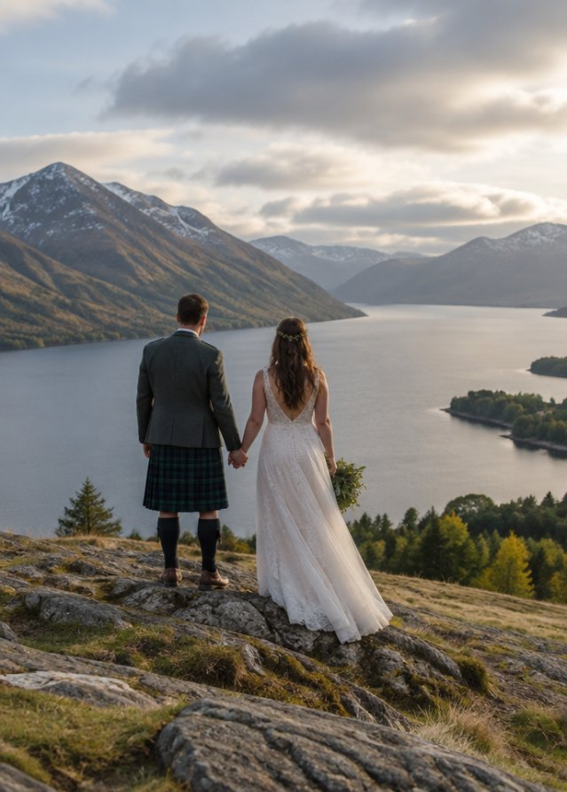
Un couple en tenue de mariage, face à un loch.Photo: Carlesmari, Ciel d'Édimbourg vu depuis le château, juillet 2008, CC BY 3.0, Wikimedia Commons.Photo: Diliff (David Iliff), Eilean Donan Castle, vue du sud-est au lever du soleil, 6 janvier 2011, CC BY-SA 3.0, Wikimedia Commons.
Impératifs du Bulletin officiel
À projeter ou à laisser en tête de fiche, pour toute la séquence. Le programme de langues vivantes de la voie professionnelle (BO spécial n° 5 du 11 avril 2019) n'a pas d'axes numérotés comme le lycée général et technologique. Il organise le travail en deux contextes d'expression et de communication, et en thèmes d'études pour les repères culturels. C'est cet ancrage que la séquence suit.
Ancrage dans le programme
Contexte principal : « situations et actes de la vie professionnelle ». Traiter une demande client, se renseigner auprès d'un fournisseur, présenter et valoriser une prestation, gérer un imprévu.
Contexte croisé : « situations et actes de la vie quotidienne, personnelle, sociale et civique ». Fêtes et coutumes, se déplacer, se loger.
Thèmes d'études pour les repères culturels : fêtes et coutumes, lieux symboliques et patrimoine, figures culturelles (Robert Burns).
Problématique
How can I organise a wedding in Scotland that respects the law, the budget and Scottish traditions, while making French guests feel at home?
Comment organiser un mariage en Écosse qui respecte la loi, le budget et les traditions écossaises, tout en mettant à l'aise des invités français ?
Niveau CECRL
Entrée attendue : B1, avec des fiches adaptées pour les apprentis encore en A2+.
Niveau visé : B1+, avec des passages vers B2 en interaction orale.
Les cinq activités langagières
La séquence, y compris la tâche finale, les couvre toutes. Chaque lesson indique celles qu'elle met en avant.
CE : compréhension de l'écrit.
CO : compréhension de l'oral.
EE : expression écrite.
EOC : expression orale en continu.
IO : interaction orale.
Objectifs lexicaux
Le mariage et la loi : marriage notice, registrar, celebrant, witness, Marriage Schedule.
Le lieu et le budget : venue, exclusive use, quote, VAT, corkage, deposit, contingency.
L'événement : wedding breakfast, run sheet, supplier, dietary requirements.
La culture : handfasting, quaich, piper, ceilidh, tartan.
Les verbes du dialogue : say, tell, ask, explain, suggest.
Les amorces de conversation : I'm calling about... ; If I understand correctly... ; Would it be possible to... ; I'll let X know.
Objectifs grammaticaux
Le discours direct et le discours indirect (reported speech) : say et tell ; concordance des temps ; changements de repères (today / that day, now / then, tomorrow / the following day, here / there, this / that).
Les amorces de conversation et les réponses adaptées au contexte : registre, politesse, client ou collègue.
En appui : l'obligation (must, have to, don't have to, mustn't), les comparatifs et superlatifs, les demandes polies (Could you..., I would be grateful if...).
Public et cadre
Apprentis de Première baccalauréat professionnel en CFA, en alternance, dans les métiers de l'hôtellerie, de la restauration, du service et des réceptions. La séquence ouvre aussi, sans en faire une obligation, vers le CS Organisateur de réceptions puis vers un BTS. Voir l'onglet Parcours et métiers.
7 lessons de 52 minutes montre en main, découpées en blocs de 15 minutes au plus. Le minutage est écrit pour toi, étape par étape, jusqu'à 52 minutes. On coupe plutôt que de déborder. Si une étape n'est pas finie, tu passes à la sortie de secours indiquée en fin de lesson, courte.
Mise en situation
You work for your entreprise d'accueil: an events and reception company, a hotel-restaurant or a catering company. A French couple, Camille Moreau and Euan Fraser (Euan's family is Scottish), want to get married in Scotland on Saturday 19 June 2027. They expect 60 guests, mainly from France. Their total budget is £25,000, and they plan £6,000 to £8,500 for the venue. They ask your company to organise everything: legal steps, venue, budget, traditions, guest travel and the coordination of suppliers on the day.
Les noms du couple et le domaine « Lochside Manor Estate » sont fictifs. Les autres lieux cités existent et accueillent des mariages. Chaque apprenti traite la demande sous l'angle de son métier: restauration et service; hôtellerie et accueil; réceptions et événementiel.
Tâche finale, évaluation sommative
Elle couvre les cinq activités langagières du BO, plus la grammaire (discours direct et indirect, amorces, registre) et le lexique. Le détail, les barèmes et les fiches imprimables sont dans l'onglet Évaluations et grilles.
Lesson 7, écrite. Compréhension de l'écrit (8 min), compréhension de l'oral (8 min), puis un email formel au domaine Lochside Manor Estate pour demander un devis et des précisions (120 à 150 mots).
Cours suivant, orale, avant My career path. Présenter au couple le projet (2 minutes), puis répondre à leurs questions (3 minutes), en rapportant au besoin ce qu'un fournisseur a dit.
Vue d'ensemble
Lesson
Titre
Durée
Activités
1
The rules, and what the couple said
52 min
CE, EOC. Diagnostic. Premières transformations au discours indirect.
CE, EOC, IO. Ponctuelle 3, lexique et registre (10 min).
5
Welcoming guests and reporting a message
52 min
CO, EE, IO. Rapporter un message vocal.
6
The big day: talking to suppliers
52 min
IO, CE. Amorces, registre. Ponctuelle 4 (8 min).
7
Évaluation sommative écrite: CE, CO, the email
52 min
CE, CO, EE.
Plus les passages oraux sommative au cours suivant (EOC, IO), 20 minutes d'activité « My career path », et une lesson de secours, Wedding Fact Swap, si le tableau ou le son manque.
CEEOC52 minutes montre en main · diagnostic (sans note)
Impératifs du Bulletin officiel
Ancrage dans le programme : contexte principal: traiter une demande client et expliquer une démarche officielle. Thème: fêtes et coutumes, lieux de cérémonie.
Niveau CECRL : B1 (diagnostic, sans note).
Activités langagières : CE, EOC.
Objectifs lexicaux : marriage notice, registrar, celebrant, witness, Marriage Schedule, Humanist; say, tell.
Objectifs grammaticaux : premières transformations en discours indirect (they said that..., they told us that...). Obligation: must, have to, don't have to.
What did the couple ask for, and what must they do before the wedding day?
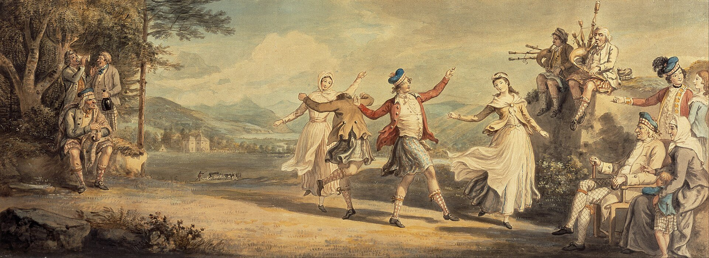
David Allan, A Highland Dance, 1780, domaine public, Wikimedia Commons (Google Art Project).
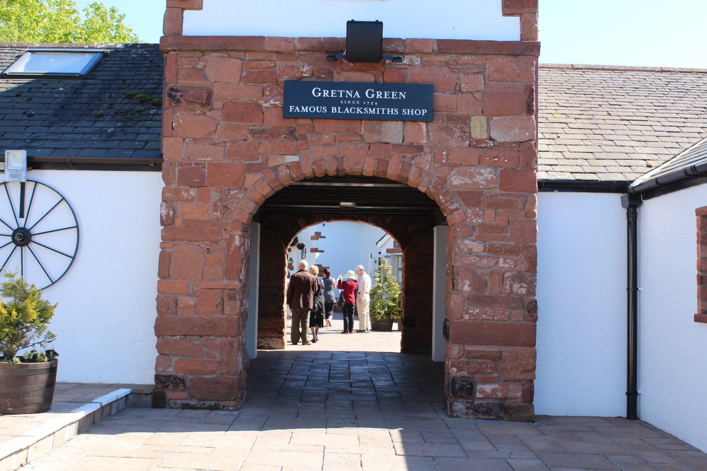
Photo: Billy McCrorie, Gretna Green, 25 mai 2013, CC BY-SA 2.0, Wikimedia Commons.
The couple's request
Camille Moreau and Euan Fraser want to get married in Scotland on Saturday 19 June 2027. They expect 60 guests, mainly from France. Their total budget is £25,000.
The legal steps
Both partners must complete a marriage notice (form M10) and send it to the registrar of the district where the wedding will take place. The notices can arrive no earlier than three months before the wedding, and they must arrive at least 29 days before. Two witnesses aged 16 or over must be present on the day. A civil ceremony is led by a registrar. A religious or belief ceremony, for example a Humanist ceremony, is led by an authorised celebrant. Handfasting is a symbolic ritual. It is not, by itself, a legal marriage.
A. True or false? Justify with a short quote.
Only one partner sends a marriage notice, to any registrar in Scotland.
The notices must arrive at least 29 days before the wedding.
The two witnesses must be 18 or over.
A Humanist ceremony is always led by a registrar.
Handfasting alone is not a legal ceremony.
The notices can arrive the week before the wedding.
B. For a wedding on Saturday 19 June 2027, give the date 29 days before, the date 3 months before, and the window to send the notices.
Corrigé
A. 1. Faux: les deux partenaires envoient chacun un avis, au registrar du district où a lieu le mariage. 2. Vrai. 3. Faux: deux témoins de 16 ans ou plus. 4. Faux: le celebrant autorisé dirige la cérémonie religieuse ou de conviction. 5. Vrai. 6. Faux: les avis doivent arriver au plus tôt trois mois avant, et au moins 29 jours avant.
B. 29 jours avant: 21 mai 2027. Trois mois avant: 19 mars 2027. Fenêtre: du 19 mars au 21 mai 2027.
Reported speech: first steps
They said that... They told us that...
"We want to get married in Scotland on 19 June 2027," they said.
"We expect 60 guests, mainly from France," they told us.
"Our total budget is £25,000," they said.
Corrigé
They said they wanted to get married in Scotland on 19 June 2027.
They told us they expected 60 guests, mainly from France.
They said their total budget was £25,000.
Trace écrite
In Scotland, both partners must send a marriage notice (form M10) to the registrar of the district where the wedding takes place: no earlier than three months before and at least 29 days before. Two witnesses aged 16 or over must be present. A civil ceremony is led by a registrar; a religious or belief ceremony, such as a Humanist one, is led by an authorised celebrant. Handfasting is a symbolic ritual, not a legal ceremony. Camille and Euan said they wanted to get married in Scotland on 19 June 2027, with 60 guests.
Devoirs. Apprendre la trace écrite. Fiche 1, C (la liste des documents) et, si besoin, terminer les trois phrases au discours indirect.
Déroulé, 52 minutes montre en main
On avance d'étape en étape, montre en main. On coupe plutôt que de déborder.
Minutes
Ce que tu fais
0 à 2
Tu fais la météo de la classe. Papiers pliés. Rien n'est projeté.
2 à 8
Tu projettes l'image puis le tableau de David Allan. Deux questions: What is happening? What would you need to organise this party today? Tu notes six mots au tableau.
8 à 16
Diagnostic (Fiche 0), individuel, sans note. Tu ramasses.
16 à 22
Tu lis la demande du couple à voix haute, puis tu la fais relire. Chaque apprenti note son métier et son angle.
22 à 34
Compréhension de l'écrit (Fiche 1, A et B): vrai ou faux justifié, puis la frise des dates pour le 19 juin 2027.
34 à 40
Tu projettes le corrigé après la mise en commun. Tu ne dépasses pas six minutes.
40 à 48
Discours indirect, premières phrases (Fiche 1, D). Puis, en binôme, 45 secondes: trois règles avec must, have to, don't have to.
48 à 52
Tu dictes la trace écrite. Tu donnes les devoirs.
Si ce n'est pas fini : sortie de secours A. Tu arrêtes après le vrai ou faux. La frise et le discours indirect passent en devoirs. Tu ne lances pas l'oral.
Version dys
Police adaptée, interligne 1,5, consignes courtes, une consigne à la fois. Fiche du jour en version adaptée.
Le diagnostic n'est jamais noté.
Pour le vrai ou faux, une phrase à la fois.
Pour le discours indirect, le début est donné: They said they... / They told us they...
Objectifs grammaticaux : comparatifs et superlatifs. Rapporter une recommandation: I would tell them that..., I would say that...
Which venue would you recommend to Camille and Euan, and how would you tell them why?
Horatio McCulloch, Glencoe, 1864, Kelvingrove Art Gallery and Museum, Glasgow, domaine public, Wikimedia Commons.
John Keats · juillet 1818
Lines written in the Highlands after a Visit to Burns's Country
There is a charm in footing slow across a silent plain,Where patriot battle has been fought, where glory had the gain;There is a pleasure on the heath where Druids old have been,Where mantles gray have rustled by and swept the nettles green;There is a Joy in every spot made known by times of old,New to the feet, although each tale a hundred times be told;There is a deeper Joy than all, more solemn in the heart,More parching to the tongue than all, of more divine a smart,When weary steps forget themselves upon a pleasant turf,Upon hot sand, or flinty road, or sea-shore iron scurf,Toward the Castle or the Cot, where long ago was bornOne who was great through mortal days, and died of fame unshorn.
Extrait de 12 vers. John Keats, Lines written in the Highlands after a Visit to Burns's Country, juillet 1818. Texte : The Complete Poetical Works and Letters of John Keats, éd. Horace E. Scudder, Boston, Houghton, Mifflin and Company, 1899. Le poème figure, dans cette édition, dans une lettre à Benjamin Bailey, île de Mull, 22 juillet 1818. Texte repris sur Wikisource.
Activité courte, 5 minutes · compréhension et lexique du paysage
Entoure quatre mots ou groupes de mots qui décrivent le paysage.
How does the poet walk through this landscape, and what does he feel? Write one or two sentences.
Which of our wedding venues is closest to this landscape? Why?
Corrigé
Mots du paysage, parmi: a silent plain; the heath; nettles green; a pleasant turf; hot sand; flinty road; sea-shore; the Castle; the Cot.
He walks slowly (footing slow) across a silent plain and over the heath. He feels a charm, a pleasure, and a deeper joy in places known by old stories, especially near the birth-place of a great man (Robert Burns).
Eilean Donan Castle, in the Highlands: a castle in a famous landscape of hills and water, farther from the airport than a venue near Edinburgh. Toute réponse justifiée à partir du poème et des fiches lieux est acceptée.
Une vue d'Édimbourg, avec le château sur son rocher.Un loch entouré de collines, par temps calme.Un paysage des Highlands, avec des collines et une route étroite.
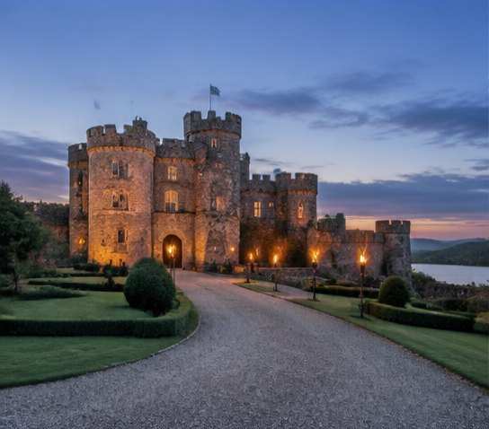
Un château et ses jardins, possibles lieux de réception.
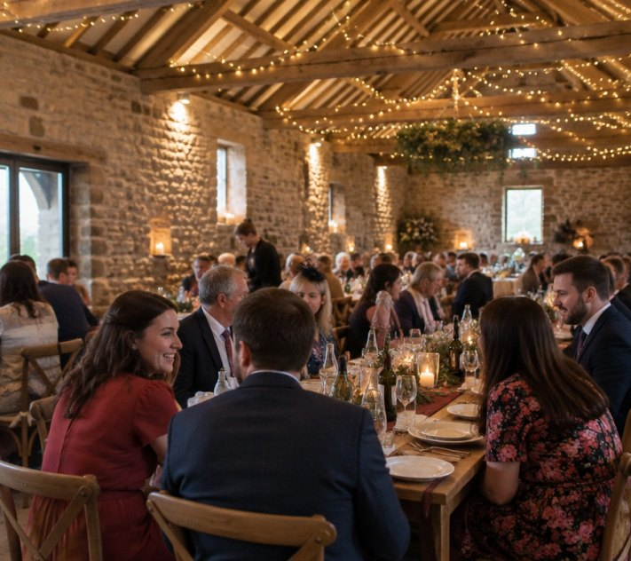
Une grange aménagée pour une réception.
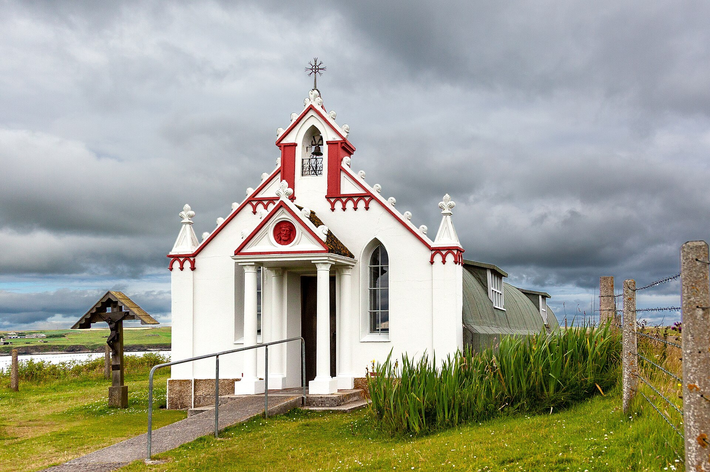
Photo: MichaelMaggs, The Italian Chapel, Lamb Holm, Orkney, juillet 2014, CC BY-SA 4.0, Wikimedia Commons.
Choose a venue
Work in groups of three. Each of you reads two venue cards and completes the grid: region, access, type, capacity, catering, accommodation, constraints.
Eilean Donan Castle (Highlands): famous castle; no catering on site; no evening ceremonies; the meal must take place elsewhere.
Fonab Castle Hotel (Perthshire): luxury lodge; rooms and catering on site; medium capacity.
Lochside Manor Estate (near Edinburgh): private estate; capacity 80; catering possible; 12 rooms; this venue is fictional.
The Italian Chapel (Orkney): beautiful chapel; very difficult to reach; no reception on site; a counter-example.
The Cow Shed at Cargill (Perthshire): contemporary barn; 50 to 150 guests; catering; a few cottages; not a castle.
Then write five sentences with comparatives or superlatives. Finish with: I would tell Camille and Euan that...
Corrigé
Repères: Eilean Donan est le plus célèbre, mais sans restauration sur place. Fonab is more luxurious than The Cow Shed. Lochside is closer to the airport than Eilean Donan. The Italian Chapel is the most difficult venue to reach. I would tell the couple that a venue near Edinburgh airport is safer for their guests.
Trace écrite
Before choosing a venue, check: the region and the travel time from the airport, the capacity, catering on site, accommodation, and the rules for ceremonies. Eilean Donan Castle is one of the most famous castles, but it has no catering, so the meal must take place elsewhere. For 60 French guests, a venue near Edinburgh or Glasgow airport is easier than a venue in the far north. I would tell the couple that a venue near the airport is safer for their guests.
Devoirs. Écrire 4 phrases comparant deux lieux, dont deux introduites par « I would tell the couple that... ».
Déroulé, 52 minutes montre en main
On avance d'étape en étape, montre en main. On coupe plutôt que de déborder.
Minutes
Ce que tu fais
0 à 2
Tu fais la météo de la classe.
2 à 8
Tu corriges les devoirs (documents, puis les trois phrases au discours indirect).
8 à 20
Compréhension de l'écrit (Fiche 2). Groupes de trois: chacun lit deux fiches lieux et remplit la grille.
20 à 26
Mise en commun en anglais, une minute par apprenti. Tu coupes dès que les cinq lieux sont dits.
26 à 32
Poème de Keats, extrait des Highlands (1818), et activité courte de 5 minutes: compréhension et lexique du paysage. Tu ne débordes pas sur la ponctuelle.
32 à 40
Grammaire: comparatifs et superlatifs, puis quelques phrases sur les lieux.
40 à 48
Évaluation ponctuelle 1, 8 minutes: comparatifs, recommandation, I would tell them that... La fiche est dans l'onglet Évaluations et grilles. Individuel. Score pour l'apprenti seul.
48 à 52
Tu dictes la trace écrite. Tu donnes les devoirs.
Si ce n'est pas fini : sortie de secours B. Tu gardes le poème de Keats (5 minutes) et la ponctuelle de 8 minutes. La mise en commun longue et le tour de table oral passent de côté: un ou deux volontaires seulement, ou deux phrases écrites.
Version dys
Police adaptée, interligne 1,5, consignes courtes, une consigne à la fois. Fiche du jour en version adaptée.
Deux lieux seulement, pas cinq, si besoin.
Le début de la recommandation est donné: I would tell Camille and Euan that...
Lesson 3 · The phone call: budget and reported speech
COCEEE52 minutes montre en main · formative discours indirect
Impératifs du Bulletin officiel
Ancrage dans le programme : contexte principal: se renseigner auprès d'un fournisseur, vérifier un devis. Ancrage grammatical: le dialogue professionnel, discours direct et indirect.
Niveau CECRL : B1 vers B1+.
Activités langagières : CO, CE, EE.
Objectifs lexicaux : exclusive use, plus VAT, including VAT, deposit, corkage, provisional hold, quote, contingency, say, tell, ask.
Objectifs grammaticaux : discours indirect: say / tell + quelqu'un, concordance des temps, changements de repères. Demandes polies.
What did the venue tell us, and how much will it really cost?
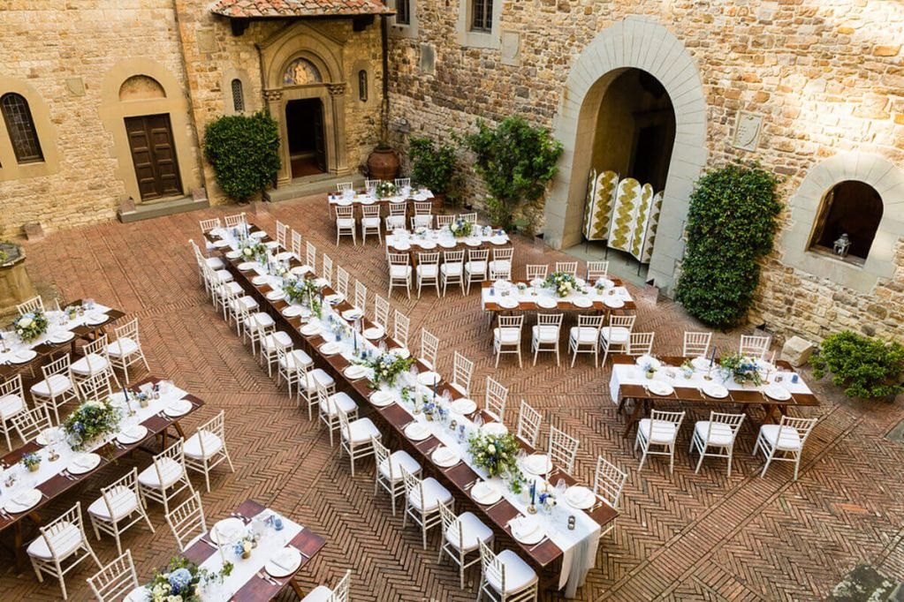
Une table de réception dressée dans une cour de pierre, prête pour les invités.
A call to Lochside Manor
Listen to the call between Léa (the organiser) and Fiona (the venue). Tick what you hear, then complete the notes: hire fee, deposit, length of the hold, staff and catering, corkage, extra chairs, marquee.
Corrigé
On entend: exclusive use, plus VAT, 14-day hold, deposit, chairs, tables, basic lighting, corkage, no in-house catering.
Exclusive use: 8 500 £ plus VAT. Deposit: 30 % to confirm. Hold: 14 days. Staff and catering: not included. Corkage: 8 £ a bottle. Extra chairs: 3,50 £ a chair. Marquee: they work with a local supplier.
Reported speech: say and tell
Say is followed by the words. Tell is followed by a person, then the words.
Direct speech
Reported speech
today
that day
now
then
tomorrow
the following day
here
there
this
that
present (are, want)
past (were, wanted)
can / will
could / would
Transform these six lines from the call.
"We can give a provisional hold for 14 days," Fiona said.
"Our prices are plus VAT," she told Léa.
"We don't have in-house catering," she said.
"Is 60 guests the final number?" she asked.
"Please send the guest list as soon as possible," she told Léa.
"I'll email the details tomorrow," Léa said.
Corrigé
Fiona said they could give a provisional hold for 14 days.
She told Léa that their prices were plus VAT.
She said they did not have in-house catering.
She asked if 60 guests was the final number.
She told Léa to send the guest list as soon as possible.
Léa said she would email the details the following day.
Check the quotes
Quote A: £5,500 plus VAT, plus a marquee at £1,800. Quote B: £6,800 including VAT, marquee included. Calculate the totals. Which quote is better for the budget? Why must you still check the conditions?
Corrigé
Quote A: 5 500 £ + 20 % = 6 600 £, plus chapiteau 1 800 £ = 8 400 £. Quote B: 6 800 £ TTC, chapiteau inclus, moins cher d'au moins 1 600 £. Mieux pour le budget: Quote B, à vérifier (dates, capacité, conditions).
Formative: report these four sentences
Score for you only.
"The ceremony room is included," she said.
"We need a 30 % deposit," she told us.
"Do you want a tasting?" she asked.
"We can hold the date until Friday," she said.
Corrigé
She said the ceremony room was included.
She told us they needed a 30 % deposit.
She asked if we wanted a tasting.
She said they could hold the date until Friday.
Trace écrite
Always check if a quote is "including VAT" or "plus VAT". In the UK, the standard rate of VAT is 20%: £5,500 plus VAT = £6,600. Say is followed by the words; tell is followed by a person, then the words. Fiona told Léa that their prices were plus VAT. She said they could give a provisional hold for 14 days. Book the venue first, then the key suppliers, then send the marriage notices.
Devoirs. Fiche 3, F (trois calculs de TVA et deux phrases à rapporter). Mission en entreprise d'accueil (Fiche 9), à rapporter à la Lesson 5.
Déroulé, 52 minutes montre en main
On avance d'étape en étape, montre en main. On coupe plutôt que de déborder.
Minutes
Ce que tu fais
0 à 2
Tu fais la météo de la classe.
2 à 6
Anticipation: What questions do you ask a venue before you book? Tu listes six questions au tableau, pas davantage.
6 à 18
Compréhension de l'oral (Fiche 3, A et B): deux écoutes, puis une troisième avec pauses.
18 à 22
Tu corriges l'écoute, rapidement.
22 à 36
Discours indirect (Fiche 3, C). Tu projettes le tableau say / tell et la concordance. Les apprentis transforment six répliques. C'est le cœur de la lesson: tu y restes jusqu'à 36 minutes, pas au-delà.
36 à 40
Devis et TVA (Fiche 3, D): Quote A et Quote B, 20 % de TVA. Tu vas à l'essentiel.
40 à 48
Évaluation ponctuelle 2, 8 minutes (Fiche 3, E, aussi dans l'onglet Évaluations): quatre phrases à rapporter. Score pour l'apprenti seul.
48 à 52
Tu dictes la trace écrite. Tu donnes les devoirs et tu remets la Fiche 9, à rapporter à la Lesson 5.
Si ce n'est pas fini : sortie de secours C. Tu gardes la ponctuelle de 8 minutes sur le discours indirect. Le calcul de TVA passe en devoirs si besoin. Tu ne lances pas un nouveau document.
Version dys
Police adaptée, interligne 1,5, consignes courtes, une consigne à la fois. Fiche du jour en version adaptée.
Le tableau say / tell reste sous les yeux.
Le début des phrases est donné: Fiona said they... / She told Léa that...
Pour les devis, un seul calcul si besoin (Quote A).
Lesson 4 · Scottish traditions, explained with respect
CEEOCIO52 minutes montre en main · formative 1
Impératifs du Bulletin officiel
Ancrage dans le programme : contexte croisé: fêtes et coutumes. Contexte principal: expliquer une prestation à un invité. Thème: figures culturelles (Robert Burns).
Objectifs grammaticaux : It means..., It shows..., The celebrant said that... Registre poli face à un invité. Prononciation: loch, quaich, ceilidh.
How can I explain a Scottish tradition to a French guest, with respect, and report what the celebrant said?
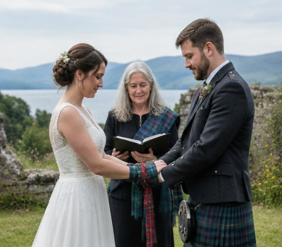
Une cérémonie de handfasting: les mains du couple sont liées d'un ruban de tartan.
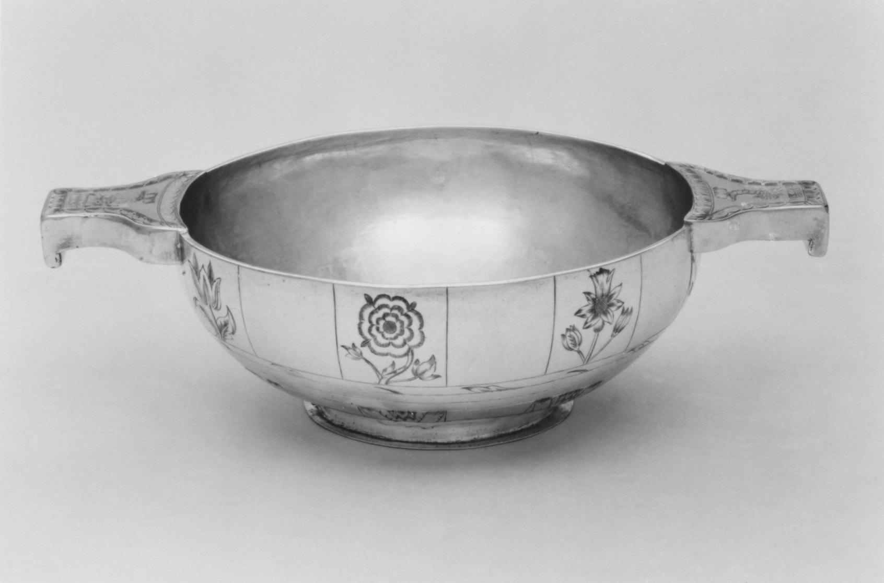
William Clark, Quaich, 1709, Glasgow, Metropolitan Museum of Art, CC0, Wikimedia Commons.
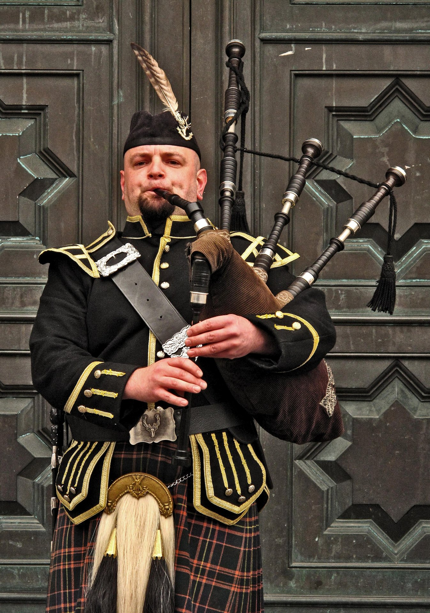
Photo: Enric, Joueur de cornemuse devant la High Court of Justiciary, Lawnmarket (Royal Mile), Édimbourg, 21 avril 2014, CC BY-SA 4.0, Wikimedia Commons.
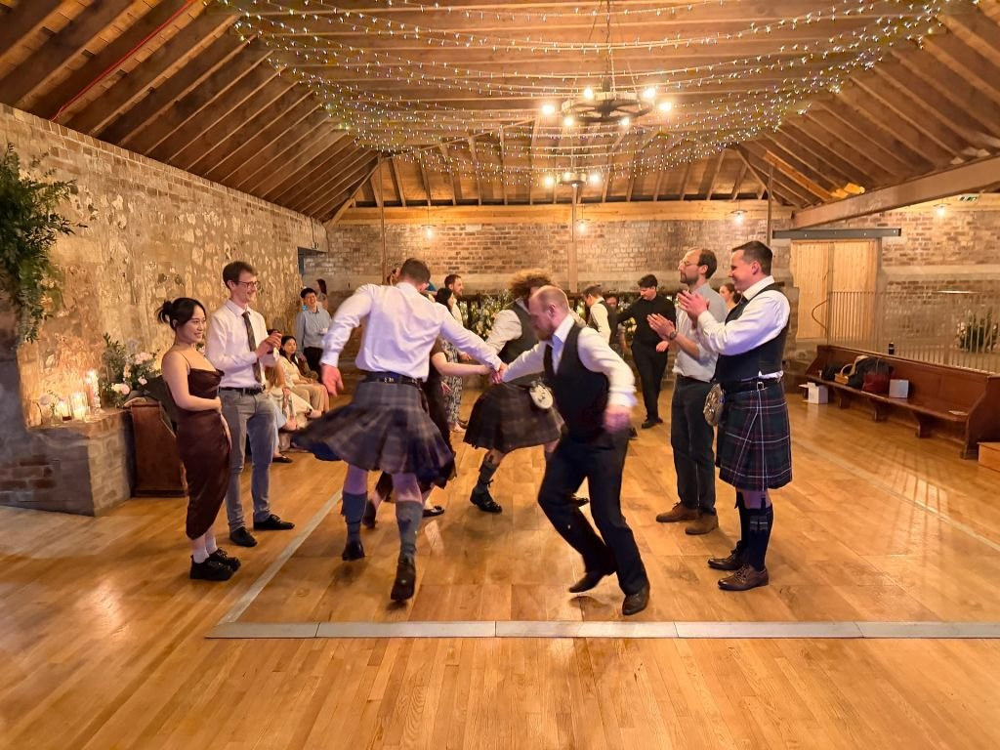
Une soirée ceilidh dans une grange, les invités dansent en tenue de fête.
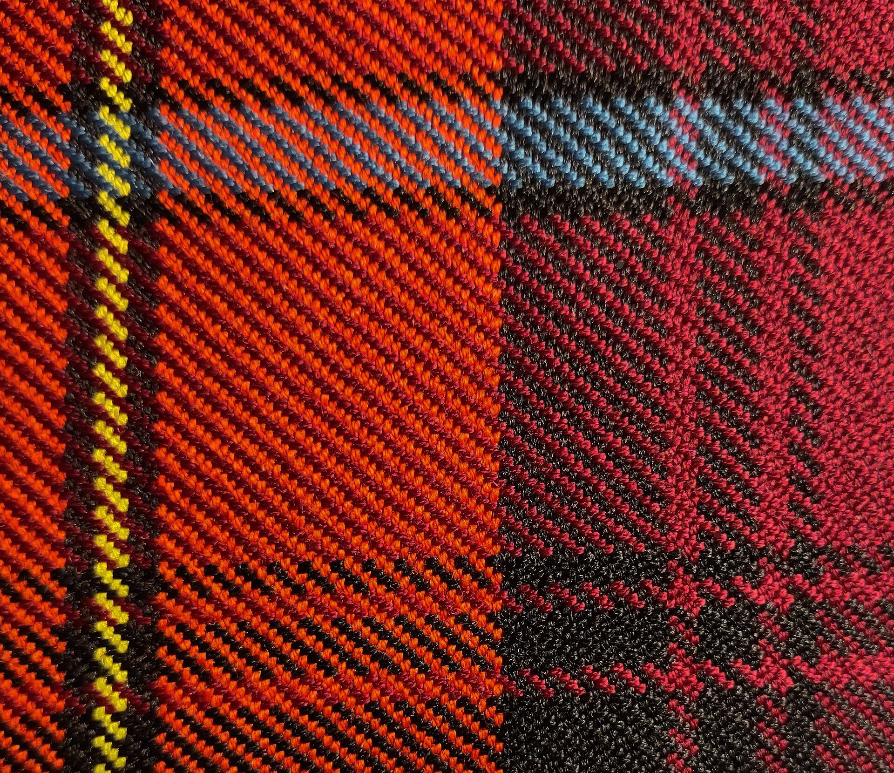
Photo: SMcCandlish, Tissu de tartan en gros plan, 22 juin 2023, CC0, Wikimedia Commons.
Formative 1
A marriage notice in Scotland is sent to: A. any UK office. B. the French town hall only. C. the registrar of the district where the wedding takes place.
Two witnesses must be: A. 18 or over. B. 16 or over. C. members of the family.
Tell is followed by: A. the words only. B. a person, then the words. C. a date.
£6,000 plus VAT = A. £6,600. B. £7,200. C. £6,000.
"We want a ceilidh," they said. A. They said they want a ceilidh. B. They said they wanted a ceilidh. C. They told they wanted a ceilidh.
Corrigé
1. C. 2. B. 3. B. 4. B (6 000 + 1 200). 5. B (they said they wanted a ceilidh).
Explain a tradition with respect
In groups of four, each person reads one tradition (handfasting, quaich, piper, ceilidh) and explains it to the others as if they were French guests. Use: It means... It shows... The celebrant said that...
Corrigé
Handfasting: the couple's hands are tied with a ribbon or a tartan. It is symbolic, not a legal act. The quaich is a two-handled cup for sharing a drink: it means trust. A piper often welcomes guests, often in Highland dress. A ceilidh is a traditional dance party where a caller explains the steps, so everybody can join in. The celebrant said that handfasting was symbolic, not a legal ceremony.
Trace écrite
Handfasting: the couple's hands are tied with a ribbon or a tartan. It is symbolic. The quaich is a two-handled cup for sharing a drink: it means trust. A piper often welcomes guests. A ceilidh is a traditional dance party where a caller explains the steps, so everybody can join in. At the end, guests often sing "Auld Lang Syne", a song by Robert Burns. The celebrant said that handfasting was symbolic, not a legal ceremony.
Devoirs. Écrire en anglais une explication de deux phrases d'une tradition pour le livret, et une phrase au discours indirect: « The celebrant said that... ».
Déroulé, 52 minutes montre en main
On avance d'étape en étape, montre en main. On coupe plutôt que de déborder.
Minutes
Ce que tu fais
0 à 2
Tu fais la météo de la classe.
2 à 12
Évaluation ponctuelle 3, 10 minutes (Fiche 4, A, aussi dans l'onglet Évaluations). Correction immédiate. Score pour l'apprenti seul.
12 à 24
Compréhension de l'écrit (Fiche 4, B): groupes de quatre, une tradition chacun.
24 à 34
Expression orale: chacun explique sa tradition au groupe comme à un invité français (1 minute), avec It means..., It shows..., puis The celebrant said that...
34 à 40
Phonologie: loch, quaich, ceilidh, sgian-dubh, Slàinte mhath. Écoute et répétition. Tu t'arrêtes à 40 minutes.
40 à 48
Le programme de la journée (Fiche 4, C): calcul des horaires, deux phrases pour le livret bilingue.
48 à 52
Tu dictes la trace écrite. Tu donnes les devoirs.
Si ce n'est pas fini : sortie de secours D. Tu sautes la phonologie. Chaque groupe n'explique qu'une tradition. Le livret passe en devoirs.
Version dys
Police adaptée, interligne 1,5, consignes courtes, une consigne à la fois. Fiche du jour en version adaptée.
Pour la formative, deux options seulement si besoin.
Le début de l'explication est donné: It means... The celebrant said that...
Lesson 5 · Welcoming guests and reporting a message
COEEIO52 minutes montre en main
Impératifs du Bulletin officiel
Ancrage dans le programme : contexte professionnel: accueillir des clients étrangers. Contexte croisé: se déplacer, se loger.
Niveau CECRL : B1.
Activités langagières : CO, EE, IO.
Objectifs lexicaux : ETA, coach, coach park, adaptor, banknotes, midges, NHS 24, layers.
Objectifs grammaticaux : rapporter un message vocal (He said that..., He told us to...). Conseils: you should, remember to. Registre chaleureux mais professionnel.
What did the coach company tell us, and what three tips should we give the guests?
Photo: Ad Meskens, Edinburgh Castle dans le haar du matin, vu depuis Princes Mall, 15 août 2010, CC BY-SA 3.0, Wikimedia Commons.
Un ciel changeant au-dessus des collines écossaises.
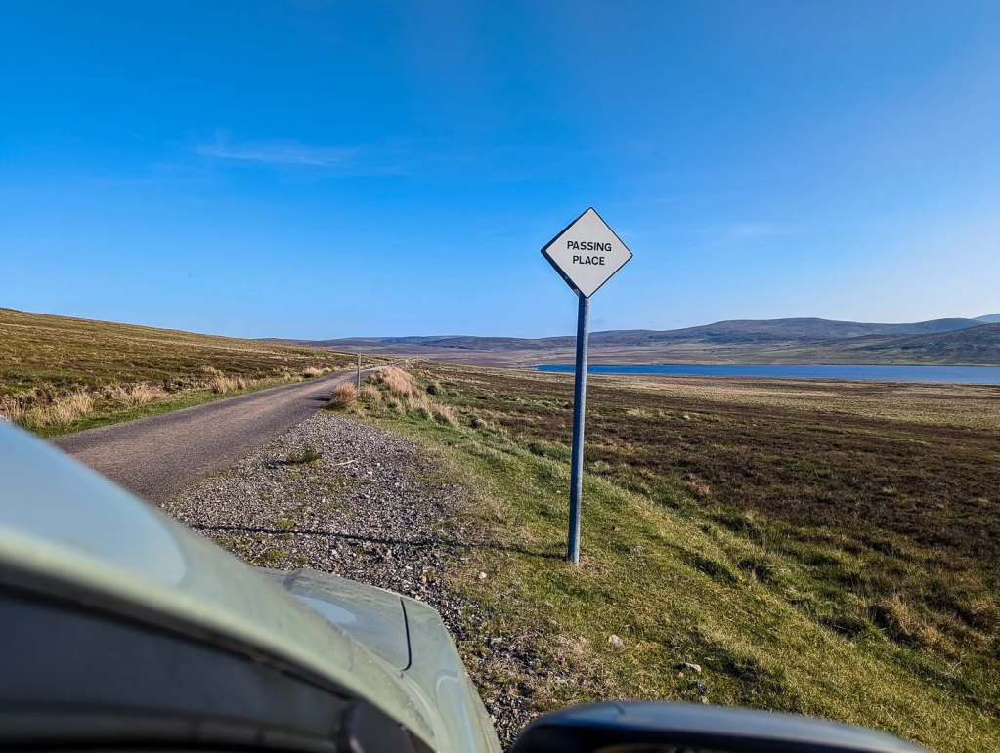
Une route à une voie, typique des campagnes écossaises.Édimbourg vue de haut, avec ses toits et ses collines.
A message from the coach company
Listen and complete: number of coaches; first departure (time and place); second departure; length of the journey; what to do if a flight is late; luggage; emergency number (the number given in the file).
Then report the message to Camille and Euan. Write four sentences with said or told.
Corrigé
Deux autocars. Premier départ: 14 h 30, Bay 5, Edinburgh Airport. Second: 18 h 00, même lieu. Durée: about an hour. Si un vol est en retard: appeler la coordinatrice (Léa). Bagages: one suitcase per guest in the hold, one small bag in the coach.
Mark said that two coaches would leave from Bay 5. He told the guests to call Léa if a flight was late. He said the journey would take about an hour. He told them they could take one suitcase in the hold.
A short travel note
Write a short travel note for the French guests (60 to 80 words). Give three tips. Be polite and warm.
Corrigé
Exemple: Dear guests, To visit the UK you need a valid passport and an ETA. In Scotland, people drive on the left. Please bring a type G adaptor, some layers and an umbrella: June weather changes quickly. If you need health advice, call NHS 24 on 111.
Trace écrite
French guests need a valid passport and an ETA (Electronic Travel Authorisation) to visit the UK. In Scotland, people drive on the left. Plugs are type G, so bring an adaptor. June weather is changeable: bring layers and an umbrella. In an emergency, call 999 (or 112); for health advice, call NHS 24 on 111. Mark said that the coaches would leave at 2.30 pm and 6.00 pm from Bay 5.
Devoirs. Finir le conseil de voyage. Relire les phrases utiles de la Fiche 6.
Déroulé, 52 minutes montre en main
On avance d'étape en étape, montre en main. On coupe plutôt que de déborder.
Minutes
Ce que tu fais
0 à 2
Tu fais la météo de la classe.
2 à 10
Retour de mission en entreprise d'accueil: chacun partage une phrase d'accueil entendue au travail, ou une situation avec un client étranger. Tu limites à 8 minutes.
10 à 20
Compréhension de l'oral (Fiche 5, A): le message de Highland Coaches.
20 à 24
Tu corriges l'écoute.
24 à 34
Discours indirect: rapporter le message au couple (Fiche 5, B).
34 à 46
Expression écrite (Fiche 5, C): un conseil de voyage en trois points, 60 à 80 mots, registre poli et chaleureux.
46 à 52
Tu dictes la trace écrite. Tu donnes les devoirs. Si l'écrit n'est pas terminé, il devient le devoir: tu ne débordes pas.
Si ce n'est pas fini : sortie de secours E. Tu gardes l'écoute et quatre phrases à rapporter. L'écrit passe entièrement en devoirs.
Version dys
Police adaptée, interligne 1,5, consignes courtes, une consigne à la fois. Fiche du jour en version adaptée.
Pour rapporter le message, le début est donné: Mark said that... He told the guests to...
Pour l'écrit, trois amorces: You need... ; Please bring... ; If you need help...
IOCE52 minutes montre en main · ponctuelle 4 (8 min)
Impératifs du Bulletin officiel
Ancrage dans le programme : contexte principal: gérer un imprévu, coordonner des prestataires au téléphone.
Niveau CECRL : B1, vers B2 en interaction.
Activités langagières : IO, CE (court).
Objectifs lexicaux : run sheet, supplier, buffer, single point of contact, dietary requirements, coeliac-safe menu, set up.
Objectifs grammaticaux : amorces de conversation au téléphone. Réponses adaptées: calme, poli, précis. Discours direct dans le jeu de rôle, puis discours indirect pour rendre compte à un collègue.
How do I speak to a supplier when there is a problem, and how do I report it to a colleague?
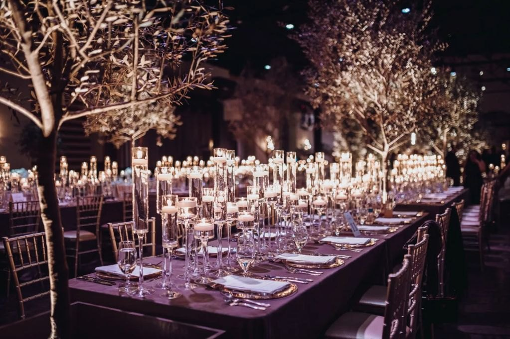
Une réception de soirée, les tables dressées sous les lumières.
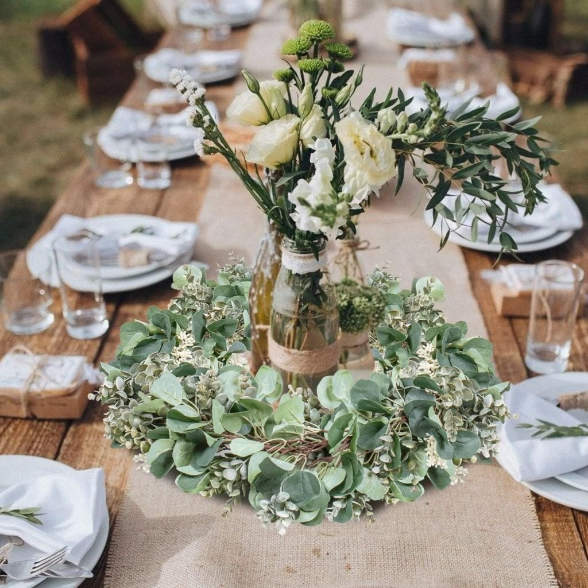
Un bouquet et un décor floral pour une table de mariage.Un joueur de cornemuse près d'un château, au bord de l'eau.
The run sheet · Saturday 19 June 2027
8.00 am: florist and caterer arrive, set up.
9.30 am: hair and make-up start (one room in the house).
11.00 am: piper arrives.
11.30 am: guests arrive; welcome drink in the garden (or in the hall if it rains).
12.30 pm: ceremony.
1.15 pm: portraits (buffer: 15 minutes).
3.00 pm: wedding breakfast.
4.30 pm: speeches.
5.30 pm: ceilidh.
7.00 pm: last coach leaves.
Who is the single point of contact? What is the buffer for? What do you do if it rains?
Conversation starters and appropriate replies
With a supplier, be polite but clear. Then report the facts to a colleague.
Hello, it's ... from ... I'm calling about ...
If I understand correctly, ...
Would it be possible to ...?
Don't worry, we have a buffer.
I'll let the photographer know.
Could you arrive 15 minutes later?
Thank you for telling me. I'll call you back in five minutes.
The hairdresser said that she needed 30 more minutes.
I told the photographer that portraits would start at 1.00 pm.
Role-play cards: the hairdresser is 30 minutes late; it starts to rain before the ceremony; a coeliac-safe menu has been forgotten; a coach is stuck in traffic.
Corrigé
Exemple: The organiser used a clear starter, stayed calm, and told the photographer that portraits would start later. The hairdresser said that she needed 30 more minutes. I told the photographer that portraits would start at 1.00 pm.
Trace écrite
On the wedding day, one person is the single point of contact for all suppliers. Everything is written in the run sheet. If there is a problem: stay calm, check the buffer time, find a solution, inform the people concerned, and protect the couple from stress. Then report the facts to your colleague: she said that..., I told him that...
Devoirs. Fiche 7, partie A (plan de l'email) et cinq notes-clés pour la présentation (Fiche 8, A).
Déroulé, 52 minutes montre en main
On avance d'étape en étape, montre en main. On coupe plutôt que de déborder.
Minutes
Ce que tu fais
0 à 2
Tu fais la météo de la classe.
2 à 10
Tu fais lire le run sheet (Fiche 6, A): qui arrive quand, et où.
10 à 18
Phrases utiles pour le téléphone, répétition chorale.
18 à 22
Préparation des jeux de rôle (cartes: coiffeuse en retard, pluie, plat pour une personne cœliaque oublié, autocar bloqué).
22 à 36
Jeu de rôle en groupes de trois, pratique (organisateur, fournisseur, observateur). 5 minutes par tour, deux tours seulement si le groupe est nombreux. Tu coupes à 36 minutes.
36 à 44
Évaluation ponctuelle 4, 8 minutes: compte rendu écrit (amorce, discours indirect, registre collègue ou couple, une solution). La fiche est dans l'onglet Évaluations et grilles.
44 à 48
L'observateur dit une réussite et un conseil, si le tour de pratique a eu lieu.
48 à 52
Tu dictes la trace écrite. Tu donnes les devoirs (plan de l'email, Fiche 7, A).
Si ce n'est pas fini : sortie de secours F. Un seul tour de pratique, puis la ponctuelle écrite de 8 minutes. Tu ne lances pas un troisième tour.
Version dys
Police adaptée, interligne 1,5, consignes courtes, une consigne à la fois. Fiche du jour en version adaptée.
Les amorces restent sous les yeux pendant le jeu de rôle.
Pour rendre compte, le début est donné: She said that... I told him that...
Objectifs grammaticaux : demandes polies. Yours faithfully / Yours sincerely. Dans l'oral: rapporter un élément entendu (The venue told us that VAT was not included).
Can I write a precise formal email, and can I present the wedding to the couple?
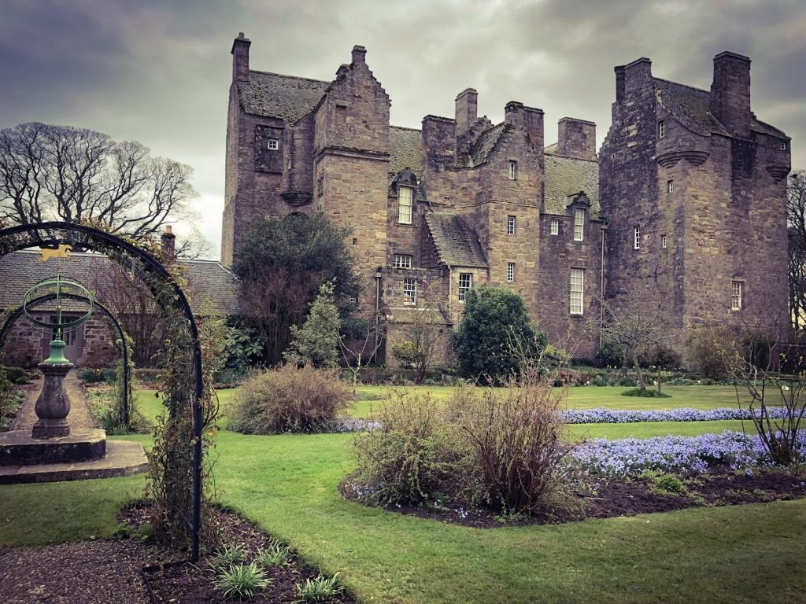
Un château et son jardin, prêts pour une cérémonie.
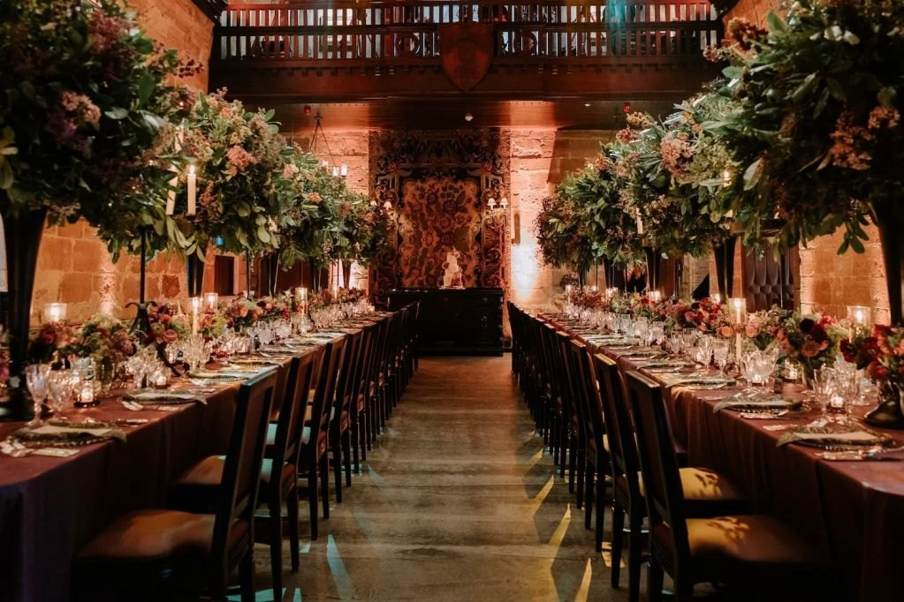
Une salle de banquet, les tables dressées pour le dîner.
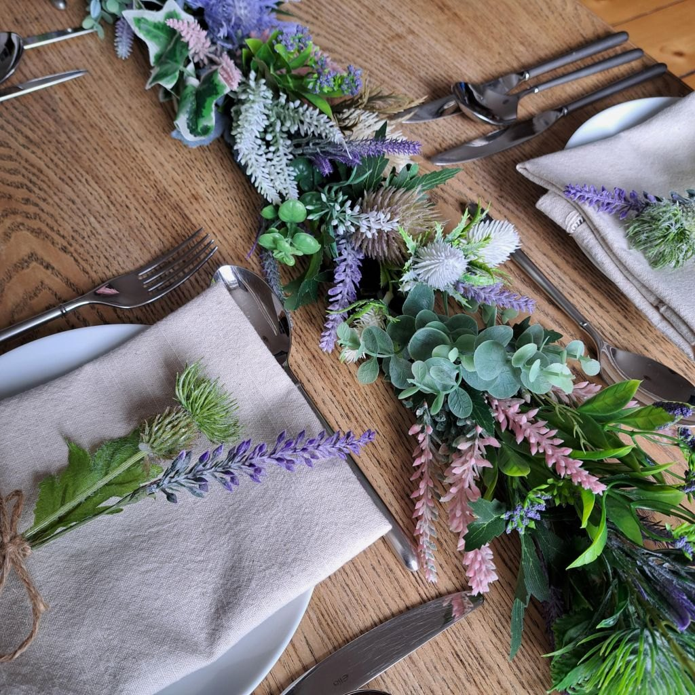
Une table dressée pour le wedding breakfast.
Write the email
120 to 150 words. You may use a paper dictionary.
Opening: Dear Sir or Madam, or Dear Mr / Ms ...
Why you are writing, the date, the number of guests, exclusive use.
What you want in the quote (including VAT?).
Three precise questions.
Closing: I look forward to hearing from you. Yours faithfully if you do not use the person's name; Yours sincerely if you do.
You may report one fact: The couple told us that their budget for the venue was between £6,000 and £8,500.
Corrigé
Exemple: Dear Sir or Madam, I am writing to enquire about a wedding reception at Lochside Manor Estate on Saturday 19 June 2027, for 60 guests. Could you please send us a quote for exclusive use of the house and gardens, including VAT? The couple told us that their budget for the venue was between £6,000 and £8,500. I would be grateful if you could also confirm the capacity of the dining room, whether you have in-house catering, and how long you can hold the date. I look forward to hearing from you. Yours faithfully, [Name] [Company] [Phone]
The pitch, if there is time
Prepare five key notes: the date and the place; one legal rule; the venue you recommend and why; the budget and VAT; one tradition, explained with respect (you may use: The celebrant said that...).
You have 2 minutes to present the project to Camille and Euan, then 3 minutes to answer their questions.
Tu ramasses l'email à 32 minutes. Les passages oraux non faits passent au cours suivant, avant My career path. La sortie de secours Wedding Fact Swap reste disponible si le tableau ou le son manque.
Déroulé, 52 minutes montre en main
On avance d'étape en étape, montre en main. On coupe plutôt que de déborder.
Minutes
Ce que tu fais
0 à 2
Tu fais la météo de la classe.
2 à 10
Évaluation sommative, compréhension de l'écrit, 8 minutes, Fiche 7, S1, aussi dans l'onglet Évaluations et grilles. Individuel, sans aide.
10 à 18
Évaluation sommative, compréhension de l'oral, 8 minutes. Tu lis le message deux fois (script dans l'onglet Évaluations). Questions, partie S2.
18 à 46
Rédaction de l'email, 120 à 150 mots, partie S3. Dictionnaire papier autorisé, fiche adaptée pour les apprentis dys. Tu ramasses à 46 minutes, même si quelques phrases manquent.
46 à 50
Autoévaluation rapide (grille apprenti).
50 à 52
Tu fais un bilan d'une phrase. Les passages oraux (EOC et IO) ont lieu au cours suivant, avant My career path, sans allonger celui-ci.
Si ce n'est pas fini : sortie de secours G. Tu ramasses la compréhension et l'email à 46 minutes comme prévu. Tu n'ouvres pas les passages oraux. Tu les places au début du cours suivant, avant My career path.
Version dys
Police adaptée, interligne 1,5, consignes courtes, une consigne à la fois. Fiche du jour en version adaptée.
Le plan de l'email est déjà structuré, à compléter.
La progression ci-dessous reprend les intitulés officiels, vérifiés sur France compétences et l'ONISEP. Elle va du CAP au BTS, avec le CS Organisateur de réceptions comme passerelle vers l'organisation de réceptions et le wedding planning. Il n'existe pas de bac pro wedding planner, et aucun diplôme ne s'appelle officiellement « BTS Événementiel ».
Niveau 3
CAP
CAP Commercialisation et services en hôtel-café-restaurant, RNCP 38424, actif (France compétences). Arrêté du 19 octobre 2023.
CAP Cuisine, RNCP 38430, actif (France compétences). Arrêté du 19 octobre 2023.
Ces deux diplômes se préparent souvent en deux ans, y compris en apprentissage. Ils ouvrent vers un bac pro du même secteur, sous certaines conditions en deux ans.
Niveau 4
Baccalauréat professionnel
Pour les apprentis actuellement en formation, les spécialités en vigueur sont:
baccalauréat professionnel Commercialisation et services en restauration, RNCP 37909, actif (France compétences);
L'arrêté du 9 mars 2026 crée le baccalauréat professionnel Métiers de la restauration, option A Métiers du service et de la relation clients, option B Métiers de la cuisine. La première année d'examen de cette spécialité est 2030. Les spécialités actuelles ont leur dernière année d'examen en 2029. Les apprentis déjà engagés dans le bac pro Commercialisation et services en restauration ou dans le bac pro Cuisine restent donc sur ces intitulés.
Après un bac pro, ou un bac technologique STHR, un CS est possible.
Niveau 4
CS Organisateur de réceptions
CS Organisateur de réceptions, RNCP 37922, actif, niveau 4 (France compétences). Le CS (certificat de spécialisation) est l'ancienne mention complémentaire. Le changement de nom vient du décret n° 2023-824 du 25 août 2023.
Formation d'un an, souvent en apprentissage, après un bac pro ou un bac technologique de l'hôtellerie-restauration, ou un brevet professionnel du secteur.
Le titulaire coordonne l'ensemble des prestataires d'une réception: commercialisation et gestion, organisation et logistique, coordination du personnel, recherche de nouveaux concepts.
Employeurs: organisateurs de réceptions, traiteurs, hôtels, restaurants et espaces de réceptions, centres de congrès et séminaires.
Exemples de lieux de formation, vérifiés: CFA de Toulouse Blagnac; CFA Campus CCI de Vaucluse, à Avignon; CFA de l'académie de Versailles. Pour la Nouvelle-Aquitaine, aucun établissement n'est cité ici tant qu'il n'est pas vérifié.
L'ONISEP précise que la formation demande le goût du contact et la maîtrise de l'anglais.
Niveau 5
BTS
Toujours en alternance possible, après le bac ou après le CS (selon les attendus de chaque BTS):
BTS Management en hôtellerie-restauration (MHR), RNCP 37889, actif, niveau 5 (France compétences). Intitulé officiel: Management en hôtellerie - restauration, option A Management d'unité de restauration, option B Management d'unité de production culinaire, option C Management d'unité d'hébergement. La première année est commune aux trois options (ONISEP).
BTS Tourisme, diplôme national de niveau 5 (ONISEP).
BTS Communication, diplôme national de niveau 5 (ONISEP).
Aucun diplôme ne s'appelle officiellement « BTS Événementiel ».
Niveau 6
Bachelor, éventuellement
Des écoles proposent un bachelor événementiel, parfois avec une spécialisation wedding planning. Exemple vérifié: l'ISEFAC, dont le bachelor prépare le titre « Chef de projet événementiel » (niveau 6, RNCP 39865); l'alternance y est possible en troisième année. Avant de conseiller une école, vérifier toujours le numéro RNCP sur le site de France compétences. Les titres RNCP 23648 et RNCP 36232 ne sont plus enregistrés.
Pour des apprentis de CFA en hôtellerie-restauration, le CS Organisateur de réceptions est la passerelle naturelle vers le wedding planning: il s'appuie sur leurs compétences en cuisine et en service, et il se prépare en alternance. Un BTS peut venir ensuite. Tous les projets sont respectés: personne n'est obligé de viser l'événementiel.
My career path (20 minutes)
À placer après les passages de la Lesson 7, ou au début du cours suivant. Activités: CE, EOC. Objectif: se situer dans la progression réelle (CAP, bac pro, CS, BTS) et dire, en anglais, où l'on se voit dans cinq ans.
Minutes
Ce que tu fais
0 à 2
Météo de la classe, seulement si l'activité ouvre un cours.
2 à 8
Lecture du schéma de parcours (Fiche 10, A) et association missions / définitions.
8 à 10
Correction.
10 à 18
En binôme, chacun dit en 45 secondes: où il en est aujourd'hui (CAP, bac pro Première, autre), et où il se voit dans cinq ans (CS, BTS MHR, BTS Tourisme, BTS Communication, bachelor, rester dans mon métier, autre). Amorces fournies. Aucune obligation de viser l'événementiel.
18 à 20
Trace écrite.
Starters: At the moment I am preparing... In five years, I would like to... I am interested in... For me, the next step could be... I want to stay in my trade because...
Corrigé
A. 1. CAP Commercialisation et services en hôtel-café-restaurant, ou CAP Cuisine. 2. Bac pro Commercialisation et services en restauration, ou bac pro Cuisine (spécialités actuelles jusqu'à l'année d'examen 2029). 3. CS Organisateur de réceptions. 4. BTS Management en hôtellerie-restauration, BTS Tourisme ou BTS Communication. 5. Bachelor événementiel, éventuellement, si le titre RNCP est vérifié.
B. 1. coordinates all the suppliers of a reception. 2. prepares food for a wedding breakfast or a banquet. 3. welcomes guests and looks after rooms. 4. serves guests and looks after the dining room. 5. is in charge of the day and is the single point of contact.
Trace écrite
After my bac pro, I can prepare the CS Organisateur de réceptions in one year, as an apprentice. A reception organiser coordinates all the suppliers of an event. Later, I can continue with a BTS, for example Management en hôtellerie-restauration, Tourisme or Communication.
Si ce n'est pas fini. Tu gardes le schéma et deux phrases orales par personne. L'association passe en devoirs.
IOCEEE52 minutes montre en main · aucun écran, aucun audio
Photo: Abubakr Hussain, Mohammed-Hayat Ashrafi, Maaz Farooq, Farmaan Akhtar et Mohammed Shah, Loch Lomond vu vers le nord depuis Firkin Point, 16 décembre 2005, CC BY-SA 2.5, Wikimedia Commons.
Si le tableau numérique ou le son ne fonctionnent pas, si le groupe est agité, ou pour un remplacement. Fiche S (A et B) gardée imprimée dans le classeur de la salle.
Minutes
Ce que tu fais
0 à 2
Tu fais la météo de la classe (papiers fournis avec la fiche S).
2 à 6
Tu écris la consigne au tableau blanc.
6 à 26
Interaction orale: les binômes échangent les informations sans montrer leur fiche, y compris une phrase à rapporter (My partner said that VAT was 20%.).
26 à 36
Compréhension de l'écrit: vérification avec le texte de contrôle.
36 à 48
Expression écrite: Write a short text message (60 words) to a French guest. Give three tips for the wedding weekend.
48 à 52
Trace écrite: les cinq faits les plus utiles, plus une phrase au discours indirect.
Corrigé
Le texte de contrôle reprend les faits des fiches A et B. Exemples: My partner said that VAT was 20%. My partner told me that two witnesses had to be 16 or over.
Lesson 2 · 8 min · CE, comparatifs, recommandation
Ponctuelle 2
Lesson 3 · 8 min · EE: discours indirect
Ponctuelle 3
Lesson 4 · 10 min · Lexique des traditions, registre
Ponctuelle 4
Lesson 6 · 8 min · Amorces, registre, discours indirect
Sommative S1
Lesson 7 · 8 min · CE
Sommative S2
Lesson 7 · 8 min · CO
Sommative S3
Lesson 7 · 28 min · EE (email)
Sommative S4
Cours suivant · 2 min + 3 min par apprenti · EOC, IO
Les évaluations ponctuelles tiennent dans le minutage de 52 minutes, sans débordement. Si une lesson n'est pas finie, la sortie de secours conserve la ponctuelle prévue quand c'est possible, et le reste passe en devoirs ou à la lesson suivante.
Chaque fiche ci-dessous a son corrigé derrière un bouton Afficher / Cacher, une grille professeur, une grille apprenti, et un bouton pour l'imprimer.
Fiche imprimable
Diagnostique · Lesson 1 · 8 minutes · pas de note
Compétences. Positionnement, premières règles, « I can ».
Fiche 0, déjà dans la Lesson 1. Individuel, sans note. Tu ramasses pour adapter la suite.
Grille professeur
Pas de note. Tu releves ce qui est déjà en place (obligation, lexique du mariage, une phrase au discours indirect) et ce qu'il faudra étayer.
Grille apprenti (autoévaluation)
Critère
Not yet
Almost
Yes
I can say what a couple must do before a wedding in Scotland.
I can report a simple sentence with they said that...
I can link this request to my entreprise d'accueil.
Compétences.CEEE Lexique des lieux, comparatifs et superlatifs, une recommandation au discours indirect.
Individuel, 8 minutes, après le poème de Keats et la grammaire. Score pour l'apprenti seul, puis pour toi.
Eilean Donan Castle has no catering on site. True or false?
Which venue is the most difficult to reach: Fonab Castle Hotel, Lochside Manor Estate, or the Italian Chapel?
Lochside Manor Estate is closer to Edinburgh airport than Eilean Donan. Complete with a comparative or keep the sentence and justify.
Write one sentence with a superlative about one of the venues.
Recommend a venue for 60 French guests. Start with: I would tell Camille and Euan that...
Give one reason that is about travel, capacity, or catering.
Items 1 à 4: 1 point. Items 5 et 6: 3 points. Total sur 10.
Corrigé
1 True: the meal must take place elsewhere; no catering on site, no evening ceremonies.
2 The Italian Chapel (Orkney).
3 The sentence is already correct: Lochside is closer to the airport than Eilean Donan.
4 Exemple: Eilean Donan is one of the most famous castles. / The Italian Chapel is the most difficult venue to reach.
5-6 Exemple: I would tell Camille and Euan that a venue near Edinburgh airport, such as Lochside Manor Estate, is safer for 60 French guests, because the travel time is shorter and catering is possible on site. Toute recommandation justifiée est acceptée.
Grille professeur (sur 10)
Items 1 à 4: 1 point par réponse juste.
Items 5 et 6: 3 points (recommandation claire, discours indirect ou amorce I would tell them that..., justification utile).
Commentaire d'une ligne. Pas de note dans le bulletin pour cette ponctuelle.
Grille apprenti (autoévaluation)
Critère
Not yet
Almost
Yes
I can compare two venues and use a superlative.
I can recommend a venue and say why.
I can start my recommendation with I would tell the couple that...
Compétences.CEEE Lexique des traditions, registre face à un invité, une phrase au discours indirect.
Fiche 4, partie A, en début de lesson. Correction immédiate. Score pour l'apprenti seul.
handfasting means: a) a legal marriage on its own b) a symbolic joining of hands c) a type of cake.
A quaich is: a) a cup of welcome b) a marriage notice c) a type of kilt.
A ceilidh is: a) a registrar's office b) a traditional social dance c) a deposit.
To an elderly guest who asks about the piper, the most respectful reply is: a) It's just a tourist thing. b) The piper is part of the ceremony. I can tell you what to expect, if you like. c) You must dance.
Report: Camille said: « Please explain the quaich to my grandparents. »
Write one polite sentence to invite a guest to join a ceilidh, without putting pressure on them.
Items 1 à 4: 1 point. Items 5 et 6: 3 points. Total sur 10.
Corrigé
1 b. The handfasting is not a legal ceremony on its own.
2 a.
3 b.
4 b (registre respectueux, face à un invité).
5 Camille asked me to explain the quaich to her grandparents. / She told me to explain the quaich to her grandparents.
6 Exemple: If you would like to join the ceilidh, you are very welcome; if you prefer to watch, that is fine too. Toute phrase polie, sans obligation, est acceptée.
Grille professeur (sur 10)
Items 1 à 4: 1 point.
Item 5: 3 points (discours indirect juste).
Item 6: 3 points (politesse, pas de pression, lexique juste).
Grille apprenti (autoévaluation)
Critère
Not yet
Almost
Yes
I can explain handfasting, a quaich and a ceilidh with respect.
I can choose a polite reply for a guest.
I can report a request with asked me to or told me to.
Compétences.EEIO Amorces avec un fournisseur, registre collègue ou couple, discours indirect, gérer un imprévu.
Après un ou deux tours de jeu de rôle (pratique), 8 minutes d'écrit individuel.
After the role play, write a short report to a colleague (5 to 8 lines).
Write the opener you used with the supplier (or would use).
Report the problem: The hairdresser said that... / I told the photographer that...
Write the solution you proposed.
Write one sentence in a calmer, more direct register, as if you were speaking to a colleague, not to a guest.
Write one sentence you would say to the couple, in a careful register.
2 points par item. Total sur 10.
Corrigé
1 Exemple: Hello, I'm calling about the 19 June wedding at Lochside. / Good morning, this is Léa, the coordinator.
2 Exemple: The hairdresser said that she would be thirty minutes late. / I told the photographer that the ceremony would start at 2 o'clock.
3 Exemple: I asked her to come as soon as possible, and I told the couple that the photographs could start with the groomsmen first.
4 Exemple: The hairdresser is late. Can you hold the family photos for twenty minutes?
5 Exemple: There is a short delay, but everything is under control, and the ceremony will start as planned.
On valorise une amorce adaptée, un report correct, une solution, et le changement de registre (collègue / couple). Les situations (pluie, plat oublié, autocar) sont acceptées si elles sont cohérentes.
Grille professeur (sur 10)
2 points par item, pas de demi-point.
La grille d'observation du jeu de rôle reste un outil de pratique: l'observateur coche une amorce adaptée, une parole claire, une solution, le calme, un report au discours indirect; puis une réussite et un conseil.
Grille apprenti (autoévaluation)
Critère
Not yet
Almost
Yes
I can start a call to a supplier with a suitable opener.
I can report a problem with said or told.
I can change my register for a colleague or for the couple, and propose a solution.
Évaluation sommative finale · Lesson 7 et le cours suivant · les cinq activités langagières
La tâche finale couvre les cinq activités du BO, plus la grammaire (discours direct et indirect, amorces, registre) et le lexique du mariage, du lieu, du budget et des traditions. Chaque partie est notée sur 20, en points entiers, sans demi-point. Un commentaire qualitatif accompagne la note. On valorise d'abord la communication. Repères, pour chaque partie sur 20: de 10 à 12, B1 en cours; au-delà de 12 et jusqu'à 16, B1; de 17 à 20, B1+.
Partie
Moment
Durée
Activité
Note
S1
Lesson 7
8 min
CE
sur 20
S2
Lesson 7
8 min
CO
sur 20
S3
Lesson 7
28 min
EE, email
sur 20
S4
Cours suivant, avant My career path
2 min + 3 min par apprenti
EOC puis IO
sur 20
Total. Sur 80, ramené au besoin sur 20 (diviser par 4). La grammaire et le lexique entrent dans chaque partie, avec un critère dédié à l'écrit et à l'oral.
S1. Compréhension de l'écrit (sur 20)
Read the message from the venue. Then answer. You have 8 minutes.
Thank you for your enquiry. You said you wanted exclusive use of the estate on Saturday 19 June 2027, for about 60 guests. We can hold the date for 14 days.
The hire fee is £6,800 including VAT. This includes the ceremony room, the dining room, tables, chairs and basic lighting. We do not have in-house catering, but we work with two recommended caterers. Corkage is £8 a bottle if the couple bring their own wine. A 30 % deposit is needed to confirm the booking.
Please note that evening ceremonies in the garden are not possible after 8.00 pm, and that we have 12 rooms on site. Extra guests would need a hotel in South Queensferry, about fifteen minutes away.
Could you confirm the final number of guests, and tell us whether you would like a tasting with one of our caterers?
Yours sincerely, Fiona Grant
What date is the couple considering, and for how many guests?
How long can the venue hold the date?
What is the hire fee, and does it include VAT?
Is catering included? Justify with a word or a phrase from the text.
How much is corkage, and when do you pay it?
What deposit is needed to confirm?
Give two constraints mentioned in the message (time, rooms, or both).
Report one request or one fact, starting with: Fiona said that... or She asked if...
Items 1 à 7: 2 points. Item 8: 6 points. Total sur 20.
Corrigé
1 Saturday 19 June 2027, about 60 guests.
2 For 14 days.
3 £6,800, including VAT.
4 No: We do not have in-house catering (they work with two recommended caterers).
5 £8 a bottle, if the couple bring their own wine.
6 A 30 % deposit.
7 Evening ceremonies in the garden are not possible after 8.00 pm; there are 12 rooms on site, so extra guests would need a hotel in South Queensferry.
8 Exemples: Fiona said that they could hold the date for 14 days. She said that the hire fee was £6,800 including VAT. She asked if we would like a tasting. Toute phrase juste, fondée sur le texte, est acceptée.
Grille professeur, CE (sur 20)
Informations factuelles (items 1 à 7): 14 points.
Discours indirect fondé sur le texte (item 8): 6 points (0 si absent, 3 si le sens y est avec une erreur de temps, 6 si la phrase est juste).
Grille apprenti, CE
Critère
Not yet
Almost
Yes
I can find the key facts in a venue email (price, VAT, deposit, constraints).
I can see what the venue asks me to confirm.
I can report one idea from the text with Fiona said that... or She asked if...
S2. Compréhension de l'oral (sur 20)
Script à lire deux fois, à voix claire, sans précipitation. (Ce texte n'est pas projeté pendant l'écoute.)
Hello, this is Camille Moreau. I am calling about our wedding on the 19th of June. Euan and I have read your first notes, and we are grateful. Two things worry us a little. First, some of our French guests will land late in the afternoon. You said the coaches would leave at 2.30 and 6.00 from Bay 5. Could the second coach wait if a flight is delayed? Second, my grandparents would like you to explain the quaich and the handfasting before the day, in simple words, so that they feel at ease. Euan's uncle also asked if a piper was included, or if we had to book one ourselves. Please call me back this evening. Thank you so much. Bye.
Listen to the message twice. Then answer. You have 8 minutes in total, including the two listenings.
Who is calling, and what is the date of the wedding?
What is the first worry, and who does it concern?
What times and place had been given for the coaches?
What does she ask about the second coach?
What would her grandparents like, and why?
What did Euan's uncle ask about the piper?
When should you call her back?
Report one sentence from the message, starting with: Camille said that... or Euan's uncle asked if...
Items 1 à 7: 2 points. Item 8: 6 points. Total sur 20.
Corrigé
1 Camille Moreau, 19 June (the 19th of June).
2 Some of the French guests will land late in the afternoon.
3 2.30 and 6.00, from Bay 5.
4 Whether the second coach could wait if a flight is delayed.
5 An explanation of the quaich and the handfasting, in simple words, before the day, so that they feel at ease.
6 If a piper was included, or if they had to book one themselves.
7 This evening.
8 Exemples: Camille said that some of their French guests would land late. She asked if the second coach could wait. Euan's uncle asked if a piper was included. Concordance des temps attendue autant que possible; le sens juste est valorisé.
Grille professeur, CO (sur 20)
Informations factuelles (items 1 à 7): 14 points.
Discours indirect (item 8): 6 points, même barème qu'à l'écrit.
Grille apprenti, CO
Critère
Not yet
Almost
Yes
I can identify who is calling and what worries them.
I can note a request about coaches, traditions or the piper.
I can report one sentence from the message.
S3. Expression écrite, email (sur 20)
Your task. Write a formal email (120 to 150 words) to Fiona Grant, Events Manager at Lochside Manor Estate. Ask for a quote and for a few precise details (catering, corkage, deposit, rooms, or a tasting). Use polite requests. If it helps, report something the couple said (They said they wanted... / They told us that...).
Plan. Subject · Dear Ms Grant, · Thank her · Remind her of the date and the number of guests · Two or three precise questions · A polite close · Yours sincerely, (you know her name) · Your name and your company.
Grille professeur, email (sur 20)
Chaque critère: 4 = très bien / 3 = bien / 2 = assez bien / 1 = à retravailler / 0 = non traité.
Tâche réalisée (sur 4): date, nombre d'invités, devis et précisions demandées.
Lexique adapté (sur 4): hire fee, VAT, deposit, catering, corkage, ou termes équivalents bien employés.
Grammaire (sur 4): demandes polies, formules, une phrase au discours indirect possible et valorisée.
Organisation et clarté (sur 4): objet, paragraphes, close.
Ton professionnel (sur 4): Dear Ms Grant, Yours sincerely, registre soutenu et courtois.
Pour 16 à 20: Very good. You can write a professional email and ask for the right information. Pour 12 à 15: Good. A few mistakes, but the venue understands your request. Pour 8 à 11: You need to work on structure and polite requests. Pour 0 à 7: Let's work together on the next email. Use the plan and the useful phrases.
Grille apprenti, email
Critère
Not yet
Almost
Yes
I can write a formal email with Dear Ms Grant and Yours sincerely.
I can ask precise questions about the quote, the deposit or catering.
I can report something the couple said, if it is useful.
S4. Expression orale en continu et interaction (sur 20)
Présenter le projet au couple (2 minutes), puis répondre à leurs questions (3 minutes), en rapportant au besoin ce qu'un fournisseur a dit. Les passages ont lieu au cours suivant, avant My career path, sans allonger la Lesson 7.
Grille professeur, oral (sur 20)
Réalisation de la tâche (présentation 2 min + échange 3 min): 5 points.
Lexique: 4 points.
Grammaire, y compris le discours indirect si un fait est rapporté: 4 points.
Prononciation et fluidité: 3 points.
Interaction (amorces, réponses adaptées au contexte, registre): 4 points.
Grille apprenti, oral
Critère
Not yet
Almost
Yes
I can present the wedding project in two minutes and say why I recommend this venue.
I can report what a supplier said, if the couple ask.
I can answer questions in a register adapted to the couple, and close politely.
Rappel du format officiel (arrêté du 17 juin 2020, annexe V ; épreuve de langue vivante, bac pro, coefficient 2) :
Situation A, écrite, 1 heure au plus, en dernière année de formation : compréhension de l'oral (document de 1 min 30 au plus, entendu trois fois, une minute entre les écoutes, compte rendu en français) ; compréhension de l'écrit (document authentique inconnu de 15 lignes de 70 caractères au plus, compte rendu en français) ; expression écrite (deux sujets au choix, l'un sur la vie quotidienne, l'autre sur la vie professionnelle, 100 à 120 mots au moins selon la consigne).
Situation B, orale, 10 minutes : partie 1, expression orale en continu, 5 minutes au plus, sur un travail, un projet, un produit, un service ou une expérience professionnelle, sans lecture, notes et une image autorisées ; partie 2, interaction, 5 minutes au plus, à partir de la présentation.
En Première : entraînement au format, sans valeur certificative.
Recalage des évaluations sommatives sur le format CCF
Les évaluations existantes sont proches du CCF. Pour qu'elles servent d'entraînement au format officiel :
Compréhension de l'oral : document de 1 min 30 au plus, entendu trois fois avec une minute entre les écoutes ; compte rendu en français (pas de QCM seul).
Compréhension de l'écrit : document authentique de 15 lignes au plus ; compte rendu en français.
Expression écrite : deux sujets au choix, l'un sur la vie quotidienne, l'autre sur la vie professionnelle ; 100 à 120 mots au moins (l'email actuel de 120 à 150 mots devient le sujet professionnel).
Oral : 5 minutes de présentation au plus, puis 5 minutes d'échange (le pitch actuel de 2 minutes est à porter à 3 à 5 minutes, sans lecture, notes et une image autorisées).
Notation : grille nationale (ci-dessous), en plus ou à la place des barèmes sur 20 par activité.
Situation A blanche, en une lesson de 52 minutes (version prof)
Minutes
Étape
Ce que font les élèves
Activité
0 à 2
Consignes
Les élèves lisent les trois parties et choisissent leur sujet d'expression écrite.
Lecture
2 à 17
Compréhension de l'oral
Trois écoutes du document (1 min 30 au plus), une minute entre chaque écoute ; prise de notes ; compte rendu en français.
CO
17 à 32
Compréhension de l'écrit
Lecture du document, compte rendu en français guidé par les questions.
CE
32 à 50
Expression écrite
Un sujet au choix, 100 à 120 mots au moins.
PE
50 à 52
Ramassage
Relecture, comptage des mots, ramassage.
52 à 55
Marge
Rangement, sortie de la salle. La lesson dure 55 minutes, minutée sur 52.
Compréhension de l'oral. document à choisir : une vidéo authentique de 1 min 30 au plus sur Gretna Green ou sur les mariages en Écosse (chaîne officielle de VisitScotland), en libre accès.
Consigne : « Écoutez trois fois le document. Rendez compte en français de ce que vous avez compris : qui parle, de quoi, où, pourquoi, et ce que la personne pense. »
Compréhension de l'écrit. Texte d'entraînement (le jour du CCF, prendre un document authentique inconnu de 15 lignes au plus) :
Gretna Green is a small village in Scotland, just across the border with England. Since 1754, it has been famous for weddings. That year, a new law in England said that young people under 21 needed their parents' permission to marry. In Scotland, the law was different: young people could marry without their parents' permission. So many young English couples ran away to Gretna Green, the first village they reached in Scotland. They were often married in the blacksmith's shop, over the anvil. Today, Gretna Green is still one of the most popular places for weddings in the United Kingdom, with thousands of ceremonies every year.
Source : texte d'entraînement écrit pour la classe, d'après les informations publiées par VisitScotland et Gretna Green Ltd.
Consigne : « Rendez compte en français du document. Aidez-vous des questions. »
Où se trouve Gretna Green ?
Que s'est-il passé en 1754 en Angleterre ?
Pourquoi les jeunes couples allaient-ils à Gretna Green ?
Qu'en est-il aujourd'hui ?
Expression écrite. Choisissez un sujet. Écrivez 100 à 120 mots au moins.
Sujet 1 (vie quotidienne) : Describe a wedding or a family celebration you remember. What did you like?
Sujet 2 (vie professionnelle) : A French couple wants to get married in Scotland. Write an email to present the services of your hotel for the wedding.
Situation B blanche (version prof)
Organisation : 10 minutes par élève (5 minutes de présentation, 5 minutes d'échange). Avec 24 élèves, prévoir 6 lessons, quatre passages par lesson. Pendant les passages, les autres élèves travaillent en autonomie au fond de la salle (fiche ci-dessous), casque ou travail écrit, sans bruit.
Minutes
Étape
Ce que font les élèves
Activité
0 à 4
Installation
Ordre de passage au tableau ; les élèves en autonomie prennent la fiche.
Lecture
4 à 15
Passage 1
5 min de présentation sans lecture, puis 5 min d'échange ; 1 min de notation.
PO, PI
15 à 26
Passage 2
Même déroulé.
PO, PI
26 à 37
Passage 3
Même déroulé.
PO, PI
37 à 48
Passage 4
Même déroulé.
PO, PI
48 à 52
Bilan collectif
Deux conseils pour la classe, sans nommer personne.
52 à 55
Marge
Rangement, sortie de la salle. La lesson dure 55 minutes, minutée sur 52.
Sujets de présentation possibles (l'élève choisit, une image et des notes autorisées, pas de texte rédigé) :
Présenter son entreprise d'accueil et une réception à laquelle on a participé (une image autorisée).
Présenter un menu de mariage ou de réception, avec les régimes alimentaires.
Présenter un lieu de réception à un couple, comme dans la séquence.
Questions d'échange, à adapter : « Why did you choose this? » ; « What was the most difficult part? » ; « What would you do differently? » ; « Would you recommend it to a customer? Why? » ; « What did you learn? » ; « Can you tell me more about…? »
Travail en autonomie pendant les passages : préparer sa propre fiche de présentation (5 mots clés, 3 phrases d'accroche, 1 image), puis faire les exercices d'Étude de la langue de la séquence.
Grille nationale bac pro LVA (BO n° 47 du 16 décembre 2021, annexe 4), version prof
Situation A, sur 12 (chaque activité de 0 à 4, demi-points possibles) :
Degré
Compréhension de l'oral
Compréhension de l'écrit
Expression écrite
4 (4 ou 3,5)
Comprend l'essentiel des informations, perçoit la cohérence d'ensemble, identifie le point de vue ou les intentions
Mêmes critères sur le document écrit
S'exprime clairement, même avec des erreurs dans les structures complexes ; lexique varié ; expose avantages ou inconvénients ; justifie
3 (3 ou 2,5)
Relève certains des éléments porteurs de sens ; saisit certains liens entre les informations
Mêmes critères sur le document écrit
Écrit descriptif ou narratif au volume attendu ; structures simples ; lexique assez varié ; sentiments ou point de vue ; erreurs qui gênent peu
2 (2 ou 1,5)
Identifie la thématique ou l'objet principal ; comprend les informations les plus significatives et quelques détails
Mêmes critères sur le document écrit
Écrit globalement compréhensible malgré des erreurs ; cherche à exprimer une appréciation ; effort de construction
1 (1 ou 0,5)
Identifie quelques sons, mots ou éléments isolés ; comprend en partie les informations factuelles (personnes, lieux, dates)
Identifie quelques mots isolés ; comprend en partie les informations factuelles
Écrit nettement trop court ; langue en partie compréhensible ; mots isolés
Situation B, sur 8 :
Degré
Expression orale en continu (/4)
Interaction orale (/4)
4
Discours assez nuancé, informé, point de vue pertinent ; langue assez fluide, prononciation claire ; supports utilisés à bon escient
Réagit avec pertinence ; argumente et cherche à convaincre simplement ; langue assez fluide
3
Discours pertinent par rapport à la dimension culturelle ou professionnelle du sujet ; langue globalement correcte ; relativement autonome par rapport aux supports
Prend sa part dans l'échange ; sait se reprendre ou reformuler ; vocabulaire globalement approprié
2
Discours d'exposition (description, narration, explication) généralement compréhensible ; cherche à exprimer une appréciation ; se détache parfois des supports
S'efforce de prendre part, réagit simplement ; expressions mémorisées fréquentes
1
Mots isolés, énoncés très courts, nombreuses pauses ; s'appuie uniquement sur les supports
Intervient peu ; répétitions et relances fréquentes ; réponses brèves
Note finale : A (/12) + B (/8) = /20. Fiche officielle : https://cache.media.education.gouv.fr/file/47/06/8/ensel369_annexe4_1423068.pdf
Fiches à imprimer
Les fiches de la séquence (0 à 10, plus la fiche S) sont dans le dossier pédagogique, en trois formats, pour l'impression et le classeur.
À l'impression de la version adaptée: police sans empattement (Lexend, Arial ou OpenDyslexic), 16 pt au moins, interligne 1,5, texte aligné à gauche, jamais justifié, une consigne par ligne, mots-clés en gras, beaucoup d'espace blanc.
Fiche 0: diagnostic (Lesson 1). Fiche 1: The legal steps. Fiche 2: Choosing the venue. Fiche 3: The phone call and reported speech. Fiche 4: Traditions. Fiche 5: Welcoming guests. Fiche 6: Talking to suppliers. Fiche 7: The final email. Fiche 8: The pitch. Fiche 9: Mission en entreprise d'accueil. Fiche 10: My career path. Fiche S: Wedding Fact Swap.
La météo de la classe (à chaque lesson, 2 minutes)
Au début de chaque lesson, chaque apprenti reçoit un petit papier « Today I feel... » avec quatre mots. Il coche un mot, peut ajouter une phrase, plie le papier et le remet au professeur.
Sunny
Cloudy
Rainy
Stormy
Aucune note. Jamais affiché, jamais projeté, jamais commenté devant le groupe. Tu lis les papiers en silence pendant la première activité.
« Rainy »: un mot discret, une charge allégée.
« Stormy »: un échange en aparté, et si besoin le protocole ci-dessous.
Les papiers sont détruits en fin de journée.
Protocole pour un apprenti en détresse émotionnelle
À mettre en place en début d'année avec la vie scolaire du CFA et le référent concerné.
Un lieu et un adulte convenus: l'apprenti peut aller travailler ailleurs (vie scolaire, CDI, salle d'étude) sous la surveillance d'un autre adulte, prévenu à l'avance. L'accord est écrit et connu de l'équipe.
Un signal discret: une carte « pause » posée sur la table, sans explication devant le groupe.
Tu préviens l'adulte d'accueil avant le départ de l'apprenti. Il n'est jamais envoyé seul sans que l'adulte soit averti. Un camarade de confiance peut l'accompagner.
Un travail prêt: la version adaptée de la fiche du jour, faisable seul et sans écran.
Après le cours: un mot bref et bienveillant, puis un retour à la vie scolaire. Jamais de discussion devant le groupe.
Si la situation inquiète au-delà du cours: procédure du CFA (CPE, référent, infirmerie, direction). L'entreprise d'accueil n'est informée qu'avec l'accord de l'apprenti, sauf procédure de protection prévue par le CFA.
Gestes de gestion de classe
Consignes courtes, écrites au tableau numérique et dites à voix haute.
Blocs de 15 minutes au plus. Rythme montre en main: on avance d'étape en étape, sans ouvrir une activité qui ferait dépasser 52 minutes.
Les traditions écossaises se présentent avec respect: on explique, on ne caricature pas. Personne n'est obligé de danser, de chanter ou de goûter un plat.
Scripts audio
A call to Lochside Manor (Lesson 3, environ 1 min 30)
Fiona: Good morning, Lochside Manor Estate, Fiona speaking. How can I help you?
Léa: Good morning, this is Léa Morel from Atelier des Réceptions, in France. I'm calling about a wedding on Saturday the nineteenth of June, twenty twenty-seven. The couple would like exclusive use of the house and gardens, for sixty guests.
Fiona: That date is still available. For exclusive use, our hire fee is eight thousand five hundred pounds, plus VAT. That includes the house, the gardens, tables, chairs and basic lighting. We don't have in-house catering, but we work with recommended caterers. If guests bring their own wine, corkage is eight pounds a bottle.
Léa: So, if I understand correctly, staff and food are not included, and your prices are plus VAT?
Fiona: That's right. To confirm, we ask for a thirty per cent deposit. We can give you a provisional hold for fourteen days. Is sixty the final number of guests?
Léa: It's the number we have today. I'll email the details tomorrow.
Fiona: Perfect. Please send the guest list as soon as you can. If you need a marquee, we work with a local supplier. I look forward to your email.
Léa: Thank you very much, Fiona. Goodbye.
A message from the coach company (Lesson 5, environ 45 s)
Hello, this is Mark from Highland Coaches, leaving a message for Léa Morel. About the wedding transfers on Saturday the nineteenth of June: we can provide two coaches from Edinburgh Airport to the venue. The first coach will leave at two thirty pm from Bay 5. The second will leave at six pm, from the same bay. The journey takes about an hour. If a flight is late, please ask the guest to call you, and you can call us. Each guest may take one suitcase in the hold and one small bag on the coach. If you need to reach us on the day, our emergency number is oh seven, then the number you have in the file. Thank you. Bye for now.
Faits vérifiés et sources
Ces faits ont été vérifiés au moment de la rédaction. Avant chaque cours, revérifier les pages officielles, car les règles de voyage et de visa peuvent changer.
Avis de mariage en Écosse: formulaire M10, au registrar du district, au plus tôt trois mois avant, au moins 29 jours avant. Deux témoins de 16 ans ou plus. National Records of Scotland / mygov.scot.
Cérémonie Humanist: celebrant autorisé, Marriage (Scotland) Act, reconnaissance des cérémonies de conviction depuis 2005.
TVA britannique: taux standard 20 % (gov.uk).
ETA pour les séjours courts au Royaume-Uni, et visa Marriage Visitor le cas échéant (gov.uk). Le certificat de capacité à mariage se demande en France avant le départ (service-public.fr).
Eilean Donan: pas de restauration sur place, pas de cérémonie le soir (site officiel du château, à revérifier).
Italian Chapel, Orkney: cité comme contre-exemple d'accès et de logistique, pas comme recommandation.
Intitulés de diplômes: France compétences (RNCP 38424, 38430, 37909, 37910, 37922, 37889, 39865) et ONISEP. Arrêté du 9 mars 2026: bac pro Métiers de la restauration, première année d'examen 2030, dernière année d'examen des spécialités actuelles 2029. Décret n° 2023-824 du 25 août 2023: mention complémentaire devenue certificat de spécialisation.
Programme de langues vivantes de la voie professionnelle, BO spécial n° 5 du 11 avril 2019.
Crédits des images
Un château au bord d'un loch, en Écosse. (image d'ouverture.)
Photo: Carlesmari, Ciel d'Édimbourg vu depuis le château, juillet 2008, CC BY 3.0, Wikimedia Commons.
Photo: Diliff (David Iliff), Eilean Donan Castle, vue du sud-est au lever du soleil, 6 janvier 2011, CC BY-SA 3.0, Wikimedia Commons.
David Allan, A Highland Dance, 1780, domaine public, Wikimedia Commons (Google Art Project).
Photo: Billy McCrorie, Gretna Green, 25 mai 2013, CC BY-SA 2.0, Wikimedia Commons.
Horatio McCulloch, Glencoe, 1864, Kelvingrove Art Gallery and Museum, Glasgow, domaine public, Wikimedia Commons.
Photo: MichaelMaggs, The Italian Chapel, Lamb Holm, Orkney, juillet 2014, CC BY-SA 4.0, Wikimedia Commons.
William Clark, Quaich, 1709, Glasgow, Metropolitan Museum of Art, CC0, Wikimedia Commons.
Photo: Enric, Joueur de cornemuse devant la High Court of Justiciary, Lawnmarket (Royal Mile), Édimbourg, 21 avril 2014, CC BY-SA 4.0, Wikimedia Commons.
Photo: SMcCandlish, Tissu de tartan en gros plan, 22 juin 2023, CC0, Wikimedia Commons.
Photo: Ad Meskens, Edinburgh Castle dans le haar du matin, vu depuis Princes Mall, 15 août 2010, CC BY-SA 3.0, Wikimedia Commons.
Photo: Abubakr Hussain, Mohammed-Hayat Ashrafi, Maaz Farooq, Farmaan Akhtar et Mohammed Shah, Loch Lomond vu vers le nord depuis Firkin Point, 16 décembre 2005, CC BY-SA 2.5, Wikimedia Commons.
Les autres visuels de la page sont des photographies de paysages, de châteaux et de réceptions fournies pour cette séquence. Leurs légendes sont descriptives seulement: aucun nom de photographe n'est inventé. Aucune image n'est utilisée deux fois. Aucune image avec filigrane ou nudité n'est retenue. La police OpenDyslexic, utilisée pour la version dys, est sous licence SIL Open Font License 1.1.
1. Minutage de l'oral sommatif (« cours suivant »)
Minutes
Étape
Ce que font les élèves
Activité
0 à 4
Installation
Ordre de passage ; les autres apprentis prennent l'activité « My career path ».
Lecture
4 à 14
Passage 1
Présentation au couple (2 minutes dans la séquence, jusqu'à 5 minutes au format CCF), puis questions du couple ; notation dans les 10 minutes.
PO, PI
14 à 24
Passage 2
Même déroulé.
PO, PI
24 à 34
Passage 3
Même déroulé.
PO, PI
34 à 44
Passage 4
Même déroulé.
PO, PI
44 à 52
Bilan et « My career path »
Mise en commun de l'activité en autonomie, deux conseils collectifs.
PO
52 à 55
Marge
Rangement, sortie de la salle. La lesson dure 55 minutes, minutée sur 52.
Sortie de secours de cette lesson : si les passages prennent du retard, les derniers apprentis passent au début de la lesson suivante ; l'activité « My career path » se termine à la maison.
L'élève ne peut pas venir en classe ou est hospitalisé
À placer dans un onglet à part, visible par l'élève. Chaque lesson se fait en 30 à 40 minutes, seul, avec la page de la séquence ouverte (documents en libre accès). Une version courte de 15 minutes est prévue pour les jours de fatigue. Le travail se dépose sur l'ENT ou se rend au retour. L'enseignante corrige et renvoie un mot.
Règle pour l'élève : « Fais ce que tu peux, dans l'ordre. Si tu es fatigué, fais seulement la version courte. Rien n'est perdu : on rattrape ensemble au retour. »
Lesson 1. The rules, and what the couple said
Je découvre (5 min). Lis les règles du mariage en Écosse et le message du couple (Lesson 1).
Je comprends (10 min). Réponds en français ou en anglais, en phrases complètes :
Who must the couple contact first?
What is a marriage notice?
What did the couple say about the date?
Étude de la langue (10 min). Discours indirect : transforme trois phrases du couple (They said that…).
Je produis (10 min). Résume la demande du couple en 60 mots.
Ma trace écrite (5 min). Recopie dans ton cahier : « Recopie la trace écrite de la Lesson 1. »
Version courte (15 min) : questions 1 et 3.
Lesson 2. Choosing the venue
Je découvre (5 min). Lis les fiches des lieux et le poème de Keats (Lesson 2).
Je comprends (10 min). Réponds en français ou en anglais, en phrases complètes :
Which venues are possible?
What is « exclusive use »?
Which venue would you choose? Why?
Étude de la langue (10 min). Comparatifs et superlatifs : trois phrases sur les lieux.
Je produis (10 min). Écris une recommandation de lieu (60 mots).
Ma trace écrite (5 min). Recopie dans ton cahier : « Recopie la trace écrite de la Lesson 2. »
Version courte (15 min) : question 3 et la trace écrite.
Lesson 3. The phone call: budget and reported speech
Je découvre (5 min). Écoute l'appel téléphonique (deux fois).
Je comprends (10 min). Réponds en français ou en anglais, en phrases complètes :
What is the budget?
What does the venue include?
What is the deposit?
Étude de la langue (10 min). Discours indirect : concordance des temps (will devient would, today devient that day).
Je produis (10 min). Rapporte l'appel à ton responsable (80 mots).
Ma trace écrite (5 min). Recopie dans ton cahier : « Recopie la trace écrite de la Lesson 3. »
Version courte (15 min) : question 1 et trois phrases rapportées.
Lesson 4. Scottish traditions, explained with respect
Je découvre (5 min). Lis les fiches sur le handfasting, le quaich, le piper et le ceilidh.
Je comprends (10 min). Réponds en français ou en anglais, en phrases complètes :
What is handfasting?
What is a quaich used for?
What happens at a ceilidh?
Étude de la langue (10 min). Registre poli : Would you like…? You might enjoy…
Je produis (10 min). Explique une tradition à des invités français (60 mots).
Ma trace écrite (5 min). Recopie dans ton cahier : « Recopie la trace écrite de la Lesson 4. »
Version courte (15 min) : question 1 et la trace écrite.
Lesson 5. Welcoming guests and reporting a message
Je découvre (5 min). Écoute le message vocal de la Lesson 5 (deux fois).
Je comprends (10 min). Réponds en français ou en anglais, en phrases complètes :
Who left the message?
What is the problem?
What must you do?
Étude de la langue (10 min). Rapporter un message : She asked me to…, She told me that…
Je produis (10 min). Écris le message transmis à un collègue (60 mots).
Ma trace écrite (5 min). Recopie dans ton cahier : « Recopie la trace écrite de la Lesson 5. »
Version courte (15 min) : questions 1 et 2.
Lesson 6. The big day: talking to suppliers
Je découvre (5 min). Lis le planning du jour J (run sheet).
Je comprends (10 min). Réponds en français ou en anglais, en phrases complètes :
What time does the piper arrive?
What are the dietary requirements?
What must you check with the caterer?
Étude de la langue (10 min). Amorces : I'm calling about…, If I understand correctly…, I'll let X know.
Je produis (10 min). Écris un dialogue de six répliques avec un fournisseur.
Ma trace écrite (5 min). Recopie dans ton cahier : « Recopie la trace écrite de la Lesson 6. »
Version courte (15 min) : questions 1 et 3.
Lesson 7. Évaluation sommative écrite
Je découvre (5 min). L'évaluation se fait à la maison ou à l'hôpital, 45 minutes, sans aide. Le document audio est sur la page.
Je comprends (10 min). Réponds en français ou en anglais, en phrases complètes :
Fais la compréhension de l'écrit.
Fais la compréhension de l'oral.
Écris l'email au domaine Lochside Manor Estate.
Étude de la langue (10 min). Relis tes traces écrites.
Je produis (10 min). Email formel, 120 mots au moins.
Ma trace écrite (5 min). Recopie dans ton cahier : « Pas de trace écrite. »
Version courte (15 min) : compréhension de l'écrit et email.
Oral sommatif pour l'élève absent ou hospitalisé
Enregistrer la présentation du projet au couple (2 à 5 minutes), puis répondre par écrit ou à l'oral à trois questions envoyées par l'enseignante.